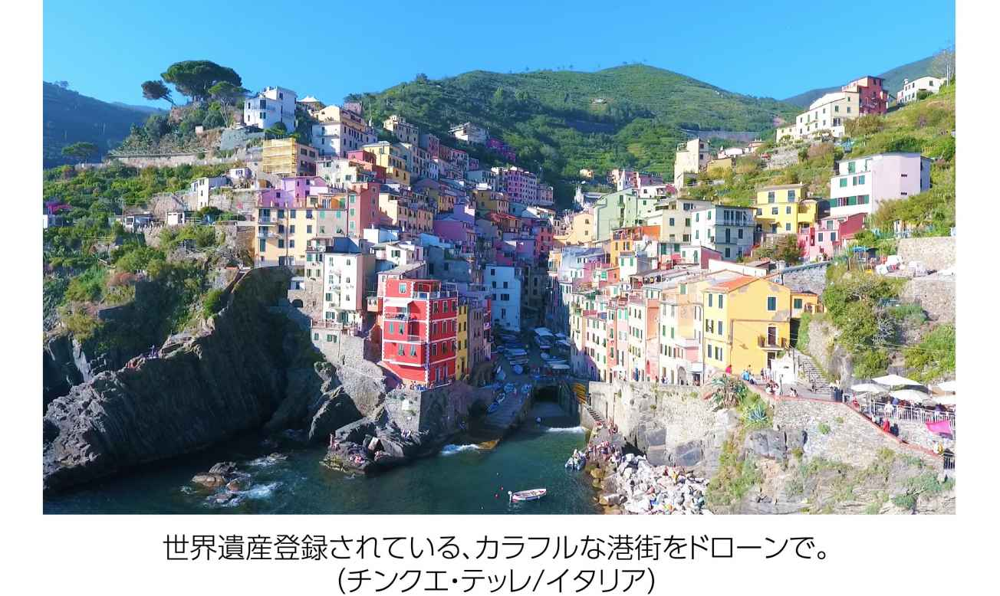
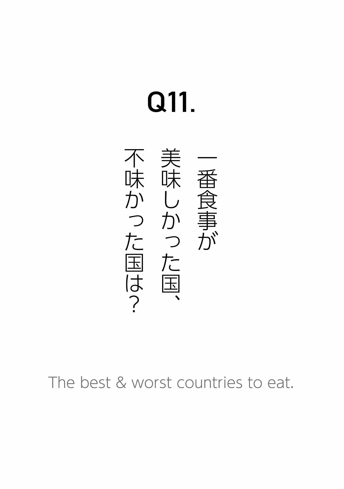
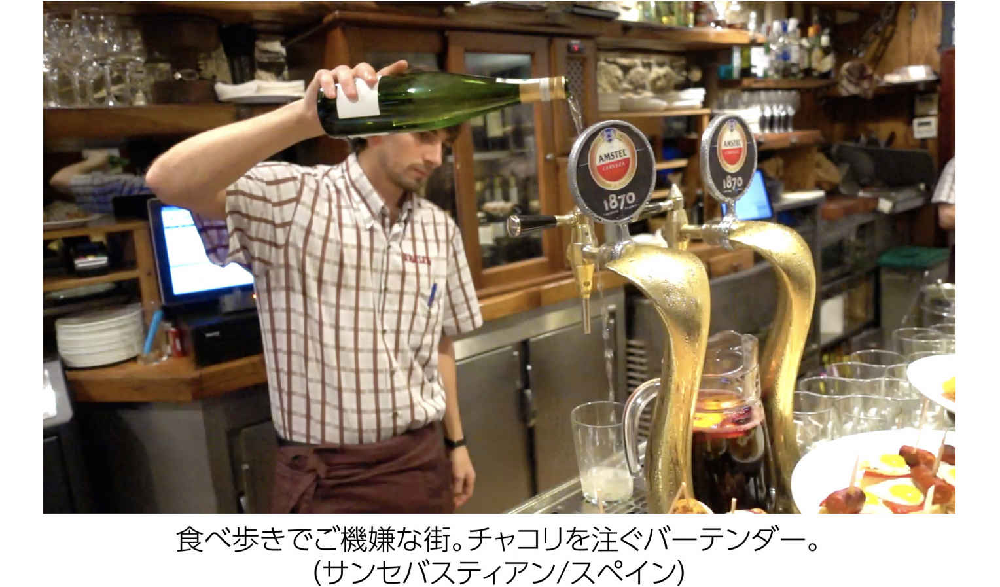
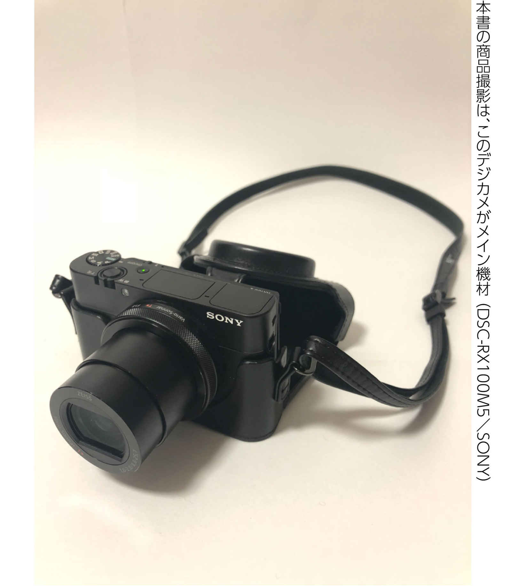
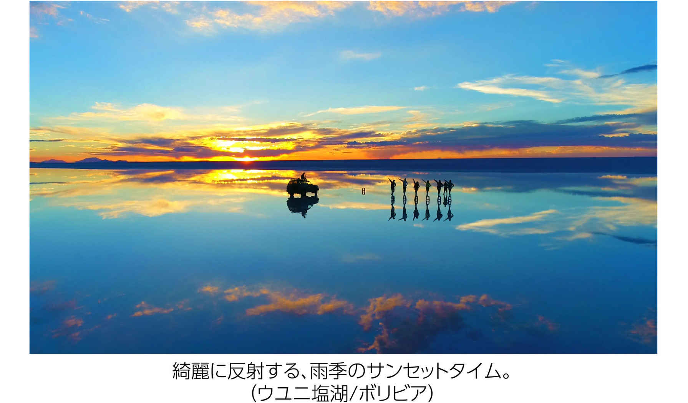

| 「職業旅人」なぜ、無期限に旅をしながら仕事ができるのか？: ビジネスクラス世界一周を無料にして世界遺産ドローン空撮絶景レポート (38books) | |
| さわ ゆうすけ | |
| (2018) | |
はじめに
職業サーファー 原 元気
...２０１２年。
僕と彼の出会いはオーストラリアだった。
僕は学生ビザ、彼はワーキングホリデービザで、ゴールドコーストという街で、共通の友人が開いたバーベキューで、たまたま仲良くなったのである。
それから今では、一緒に世界中を旅する良き仲間となった。
僕はかれこれ、今日までの５年間、彼から自由な生き方、旅をしながらできる働き方を、直々に学ばせて頂いているクライアントでもある。
当時、サーフィンが大好きだった僕は将来に対して悩んでいた。日本に帰国してから雇われ会社員として「週末サーファー」に戻る生活に不安を抱えていたのである。どうしたら、彼のように自由に旅する生活が送れるのか？
「現地集合・現地解散の旅」という、彼が掲げたスローガンに集まった仲間と共に、そんな生き方を目指す斬新な企画に僕は参加することにした。
「人生１回！」をモットーに世界中を、仕事に遊びに飛び回る男。職業旅人、さわゆうすけ。
彼は１年の内、３分の２を海外で過ごし、年間３５０日をホテルで暮らす、プロフェッショナル・トラベラー（Professional-traveler：通称ＰＴ）である。
「世界の野良犬」という肩書きでMacBook一台個人起業法の第一人者、Ｗｅｂコンサルタント、フリーランス育成のプロデューサーでもあり、
またその一方で、趣味で始めたドローン映像がメディアに取り上げられ、その影響で本人自身もＴＶ出演を果たし、「ドローン空撮職人」として知られている。
彼の口癖は「失敗はネタ」という言葉。なかなか上手くいかない僕に、いつもそうエールを送ってくれた。彼は、あれやこれや口で教えるタイプではなく、背中で語る古き良き昭和の職人気質みたいな一面がある。
誰よりも率先してチャレンジする姿勢、失敗しても決して諦めない姿勢、好きなことに没頭して人生を全力で楽しむ姿勢。そんな彼の背中を見て、僕たち仲間はいつも自分たちの輝く未来に希望と確信を持っていた。
...そして２０１５年。
僕は大好きなサーフィンをしながら、世界中を旅するライフスタイルの実現に成功した。理想であった、旅をベースにする生き方が現実となった。
これも全て彼と出会い、チャンスを与えてくれたおかげである。
「旅人は体が資本！」健康、アンチエイジングの分野にも力を入れ、毎年若返りながら、エネルギーが溢れてる感覚だと、彼は言う。
一方で、英語、タイ語、スペイン語、朝鮮語といった、多言語習得もしながら、僕らに向けて、彼が見たグローバルな視点で「世界の生きた情報」をリアルタイムに発信してくれる。
どんどん活躍の場を広げていく彼は、今後一体どうなっていくのだろうか...
僕はさわゆうすけファンの一人として、彼に「38 個の質問（さわ＝38 ）」を考え、彼の脳内にぶつけてみることにした。
「職業旅人とは一体何者なのか？」きっとこの本を読み終わる頃には、あなたの頭の中は「旅がしたい！」そんな幸せな気持ちで一杯になることだろう。
それでは一緒に、「職業旅人」の脳みそを解体してみよう！
げんき ：職業旅人、さわさん。僕も普段はノマドサーファーって言ってますけど、今日は職業サーファーで！
さわ ：おー！げんきさんは、職業サーファー！カッコいいですね。今日は、職業旅人と職業サーファー。
げんき ：そうですね！お互いシンプルな肩書き。
さわ ：シンプルでいいっすね！
げんき ：普段お世話になっている、さわさんの事って、僕はよく知っているつもりですけど、今日は改めて色々な質問しますね！「さわ」だけに、「38 」個の質問を用意させてもらってます！
さわ ：38 個！ラッキーナンバー38 ですからね（笑）
げんき ：ですね（笑）その中から、さわさんの事をもっと掘り下げられたらいいなっていうのと、この書籍を読んでくださっている皆さんに、「職業旅人」の面白さ、そして魅力が伝わればいいなーって考えてます。
さわ ：職業旅人の解体新書的な？
げんき
：ですね！本当にそうなるんじゃないかなって。
僕が既に知っている事も含め、さわさんのプロフィール、今の僕にも気になるような旅の裏話まで。
職業旅人の全部を引き出せたらなって思ってます。
さわ ：おー！ぜひ、引き出してください！
げんき ：では、まず１つ目の質問から順番にお聞きしていきたいと思います。いつから「職業旅人」と名乗ってますか？その自覚的な部分は？
さわ
：んー、そうですね。職業旅人といっても、実はフェーズがあったんですよ。
いわゆる、現在のプロフェッショナル・トラベラーとしての永遠の旅人、これは２０１３年10
月１日から。
この日から、完全に日本非居住者になり、住所不定。
げんき ：２０１３年とは、４年前ですね。
さわ ：そうですね。現在、５年目突入です。
げんき ：５年目かぁー。
さわ ：ですね、そこから永遠の旅人状態。でも、そこに辿り着くまでは「自由業旅人」という肩書きで長い間活動してました。
げんき ：自由業旅人という肩書き？
さわ
：そうなんですよ。これって実はこだわりがありまして。
私は会社員時代から、フリーランス的な個人活動の名刺を作っていて、すでに自由業旅人と名乗ってましたよ。
げんき ：へー、それは面白い！
さわ
：例えば合コン行ったり、パーティー行ったり、起業セミナーとか行った時に、雇われてる会社の名刺を出すのって、マジで「ダサっ！」て思ってました。
だって自由を目指し、自由人になりたい、将来は旅人になりたい。それなのに、そんな自分が会社の名刺を相手に差し出す行為、それはもうおかしな話。
自分は「会社の飼い犬ですよ」って言ってるような行動そのもの（笑）
げんき ：そうかー（笑）
さわ
：個人活動するなら、最初にオリジナルの名刺を作ろうって思いました。
自分の中で自由業旅人って妥当な肩書きでしたね。
だって、会社員やりながら副業やビジネスやってて、自分で事業をやってるわけだし。それは「自由業」ですから（笑）
げんき ：たしかにそうっすね！
さわ
：且つ、その当時から結構旅してました。平日はもちろん会社員やってましたけど。
例えば土日使って、一泊二日で東京から鳥取砂丘まで、車ぶっ飛ばして行ってたり。あとは週末や祝日、上手く有給を絡めて、10
日間の沖縄の旅とか。一人で旅に行ったし、仲間ともその時から現地集合、現地解散。
なんやかんや当時の自分でも、できる範囲でどんどん旅してましたよ。
「オレ、旅人だぜー！」って思いながら。
げんき ：そうですかー、そうなると、職業旅人っていうのは、昔からやってる感覚ですよね？
さわ ：そうですね。20 代前半の時からなので、もう10 年以上。会社員やりながら、できる限りたくさん旅して、当時から既に職業旅人でしたね。
げんき
：一番皆さんが、これ気になってると思うこと。
職業旅人って職業ですから、何を仕事にして旅が出来ているのか？
ここをざっくりでもいいので、聞きたいですねー！
さわ
：私の仕事を大きく分けると、二つの仕事をやっています。
一つはＷＥＢ関係全般。ＷＥＢクリエイターとして、ホームページ制作をしていた時期もありますが、今はそのメインの作業はビジネスパートナーに任せてます。
あとは、マーケティング関連、ビジネスコンサルティング業。
その他には、オンライン上でコミュニティを作り、フリーランスの育成支援。
先日はここ一年を通して、年に２回やるか、やらないか程度のセミナー講師をしてみたり。
ＷＥＢ系全般の業務を「野良犬」っていうビジネスネームで活動しています！
げんき ：一つ目は野良犬ですよね。もう一つは？
さわ
：もう一つは、「ドローン空撮職人」として、ドローンを使った世界の絶景映像を撮影してます。
それはもともと趣味で始めたんですが、ＳＮＳだったり、ＷＥＢ上のメディアで公開してました。
テレビ関係、広告関係の方が私の映像を見つけてくれて、今はその映像を有料で貸し出したり、販売したりして、収益化しています。こういう形で私は二つの仕事、つまり２アカウント制で活動してます！
げんき
：そうですよね、「野良犬」と「ドローン空撮職人」の２アカウント。
ドローン空撮職人の方は、始められてどのくらい？
さわ ：ドローンはもう、３年目になりましたね。
げんき ：３年目ですか。旅人やりながら、趣味も収益になってるのかー！
さわ ：そうですね。他にはあまり事例がないと思いますね。
げんき ：それは聞かないですね。普通の人はね、「えー？」って感じですよね、きっと。
さわ
：旅好きな人って世の中、絶対多いと思います。この書籍読んでいる方もほぼ間違いなく。
旅好きってことは、同時に旅先で写真、映像、動画編集をする人も多いと思うんですよ。
それに、私よりクオリティ高いセンス持っている人って山ほどいるはず。
でも何故、さわは収益にしているのか？って、疑問に思われてもおかしくない。
でもこれって、「自分の媒体」を持ってるかどうかで絶対に変わってくるんです。
自分のメディアを持つ、自分のブログ、ページを持つ、自分のチャンネルを持つ、と言う事ですね。
そうすれば自分が世の中に露出し、知ってもらえる機会が増えていきます。
げんき ：情報配信してるかどうか、それが鍵ってこと？
さわ
：そうですね。クリエイター気質な人ってマーケティングスキルがない場合が多いです。
だから、クリエイターの方はマーケティングをきちんと勉強すれば良い。
スキルがマーケッター寄りの方は、クリエイティブなセンスっていうものを、ちょっとプラスする工夫。
げんき ：初めからどっちも出来るようなスキルって持ち合わせてない場合、努力は必要ですか？
さわ
：ですね。努力したりもそうですが、あとはコラボレーションする事だって出来ると思うんですよ。
クリエイターとマーケッターのコラボ。そこはアイディア次第ですよ！
げんき ：なるほどー！
さわ
：私はどっちも、たまたま好きなのでラッキー！でも周りの仲間とコラボも普通にします。
全部一人でやろうとしないことが大事。仕事量には限界がありますから。
げんき ：３つ目の質問は、パスポートについて。日本国籍のパスポートなんですか？って、よく聞かれませんか？（笑）
さわ
：そうですね、一応、日本国籍ですね（笑）
よく聞かれるシリーズは他に、「日本人なの？」「日本に住んでないってことは外人なの？」あとは、「住民票はどこなの？」とか。
日本に住んでなく、住民票もないけど、日本人だし、日本発行のパスポートを持ってます。
げんき ：今、目の前にパスポートお持ちですよね？
さわ ：そうそう、パスポート持ってますよ。「増補」してるので、普通より分厚いサイズです。
げんき ：ですよね！僕のパスポートの倍くらい厚い！（驚）
さわ
：分厚いっすねー！普通のパスポートの２倍ぐらいの厚み。
（ページを開いて）ここから追加分のページですね。普通のパスポートより40
ページ分多い！
ページが縫い直しされて、そこを補強テープで貼られて、増補欄には「Ｓ１〜Ｓ40
」っていう見慣れないページ表示になります。
パスポートの査証欄（スタンプのページ）の増補というサービスは、パスポートセンターに持ち込んで、１回だけ出来るんですよ。
げんき ：１回のみ？
さわ ：そうみたいです。期限内に１回のみ。
げんき ：レアですよね。増補したパスポート。僕は初めて見たかもしれないですね。
さわ ：これって全て旅の思い出ですねー。
げんき
：そうですよね。いやー、これ見たら本当すげぇー。
10
年パスポートでこれ！あとパスポートの期限は何年くらい残ってますか？
さわ
：これはあと、７年ぐらい。無期限の旅に出て、２年目の時に更新がありました。
無期限の旅、１年目の時も結構なスタンプの量だったんですけど。
なので、今はこんな感じのスタンプの数。これが多いか少ないか、どう感じるかは人それぞれですが。
げんき ：パっと見は多いですよね。普通の人に比べたらもう明らかに。
さわ ：世界でリアルに、スタンプラリーみたいな。
げんき ：やってますね〜！見たことないですよ、このスタンプとか、どこの国？
さわ ：これはミャンマー。あとは、北朝鮮に行った時の「空白の期間」とかあります。北朝鮮では、スタンプは押されないので（笑）
げんき ：そうなんすかー！へぇ〜、それは面白いですね。
さわ
：えーと、北朝鮮・・・あ！これこれ！これがそうですよ！中国の出国スタンプ、出国日が７月16
日で、再び中国に戻って入国している日付は、７月19
日になってますね。
形の上では分かりませんが、この空白の３日間が北朝鮮に行っていた証拠なのです。
げんき ：うわ〜！それ面白いっすね！逆に、スタンプがないことが入国した証拠って（笑）かっけぇーそれ！
さわ ：それが２回あります。北朝鮮には２回訪問してますので（笑）
げんき ：あとは、最近キューバにも行かれてたみたいですね？
さわ
：そうですね。私はキューバでも入国スタンプ押されなかったです。ツーリストカードみたいなものがあって、そっちに押されて。それは最後に回収されました。
キューバのスタンプがあると入れない国とか、もしかしたら、そういうのがあるのかも？（※１）
あと、他の旅人から聞きましたが、イスラエルとかもそうみたい。周辺国の入国時に影響があるとか。
どこどこの国へ行った人は入れないとか、色々規制があるみたいですよ。アメリカの入国管理とか、特にそのあたり敏感でしょうね。
げんき ：ありますねー、そういうの。
さわ ：こういう判断も自己管理。スタンプ増えた！って喜ぶのではなく、そこはきちんと考えないとですね。
入国ビザ問題、旅人にとって、命の次に重要です。
げんき ：そうですよね。パスポートの管理とかもお聞きしていいですか？
さわ ：管理ですか？ぜひぜひ！私は基本的に、ずっとポケットにパスポート入れてます。
げんき ：まじすか？旅先で？
さわ ：はい！基本的にずっと前ポケットに入れてます。ホテルの部屋にも置かないですね。
げんき ：へぇー！逆にそれで、失くした事はないんですか？
さわ ：一度もないです。私、基本的に、ジーンズの前ポケットにずっと手を突っ込んでます。
げんき ：たしかに、そのイメージありますよね。じゃあ、常に手がパスポートに触れてるぐらい？
さわ ：ポケットに手を入れて、パスポートと財布はずっとタッチしてますよ（笑）
げんき ：すげぇー！プロですね。旅のプロ！僕は、そこまで自覚高くないですもん。
さわ ：ずっとポケットに手を入れてると、スラれる要素ないですから。
げんき ：たしかにないですね。あと僕は、さわさんに教えてもらった、あの薄い財布のおかげで助かってます！
さわ ：小さい財布、abrAsus（アブラサス）ですね！
げんき ：アブラサス、すげぇ調子良くて最高！
さわ ：調子いいっすよね、あれは！
げんき ：前ポケに入るってのがね。
さわ
：ですね！前ポケっていうのが最高ですよね。
サイズはクレジットカードの大きさと同等。それがちょっと分厚くなったぐらい。カードはしっかり５枚も入る。
小さいのに、お札も普通に10
枚以上は入るし、コインも入りますね。
げんき ：アブラサス、絶好調でございます！
さわ ：これは、私の口コミから結構流通してるかも（笑）
げんき ：流通させてますよね（笑）先日のセミナーのときも言われてましたよね？
さわ
：はい！言いました！参加者の方から「お財布のアフィリリンク（※２）くださーい！」って。
嬉しいですよね、そういう相手目線でのお気遣い（笑）
※１： 私の旅仲間には、キューバでパスポートにスタンプを押された方もいる。ケースバイケースで異なることもあるようで、海外では謎であることもしばしば。
※２： 正式名称「アフィリエイト・リンク」。自分が紹介したい商品を販売しているページへ飛ばす、自分専用ＵＲＬのリンクのこと。
自分専用のアフィリリンクをホームページに貼ったり、直接紹介することで、自分が商品紹介をしたと販売者側にわかってもらえる仕組み。
そこから正式成約があった場合、紹介者はアフィリエイト報酬を獲得できる。10
％程度の紹介報酬から１００％バックまで様々。
アフィリリンクは、アフィリエイト仲介業者「ＡＳＰ（Affiliate Service Provider）」から発行してもらえる。
身近なＡＳＰだと「ハピタス」「Ａ８．ｎｅｔ」などが有名である。

げんき ：４つ目の質問。さわさんの旅のスケジュール管理、これはどうされてますか？
さわ
：スケジュール？基本的に、行きたい時に、行きたいところへ行ってます。
世界を旅するようになってから、北半球、南半球とか、大陸の位置、地球の形も意識するようになってますよ！
げんき ：ははは（笑）
さわ
：地球儀レベル！立体的に世界地図を捉えるようにしてます。
季節的な話をするのであれば、今お話しているこの時点では、日本は12
月です。
寒いじゃないですか、日本の冬。この時期の北半球。だから今から、夏のオーストラリア行くわけですよ！
げんき ：今日、これからですよね？
さわ
：今日ですよ！これから夕方、成田出発です。
12
月の南半球は夏です！この時期のオーストラリアは、時期が逆なので、日本の６月、７月と似てるイメージです。
げんき ：そうですよね〜。真逆ですからね！
さわ
：真逆ですよ！１月、２月、３月っていうカレンダーは世界共通ですけど。
２月からは、真夏の南米に行く予定です。リオのカーニバル！やっぱりこの時期、南半球は夏の時期ですよね！
何月にどこに行こうとか、自分の中で季節やベストシーズンを意識するようになってきました。
げんき ：そうか〜！ざっくり言うと、そういう季節的な分け方でスケジュール管理してる感じ？
さわ
：そうです！あとは、５月、６月、７月の頭まで、日本だと梅雨があるじゃないですか。
この時期はジメっとした感じだし、雨に当たりたくない。なのでこの時期、一番最高なのは地中海です！
げんき ：地中海？
さわ ：そうです！５月、６月、７月の地中海周辺の国、ヨーロッパは本当に最高です！
げんき ：過ごしやすいんですか？
さわ
：めっちゃ過ごしやすいっすよー！スペインとか週間天気予報みたら、オール晴れ！
雨降らねぇーの？っていうくらい、日中はカラッ！として気持ち良いです。
げんき ：そうすか〜。暑すぎはしないですか？
さわ ：実際、確かに暑いですけど、ジメッとした気持ち悪さがないんですよ。
げんき ：夏のオーストラリアも乾燥してて、気持ちいいですね！
さわ
：夏のオーストラリア、夏の地中海！
スペイン、南フランス、イタリア、ギリシャ、マルタ共和国、あとはこの前、初めて行ってきたアルバニア。
げんき ：アルバニア（笑）お気に入りなんですよね？
さわ ：アルバニア、いい国でしたね（笑）
げんき
：サラッと話されてますけど、すごくスケールがデカイ話ですよ。
世界の季節とか、リアルな地中海の話とか。
さわ
：今になって中学校の時に習った理科、社会の勉強、これが面白いです！
理科の天体の授業の、地軸の傾きとか、白夜の話とか。
すごいリアルに感じます。社会の地理の授業で学んだ地中海性気候。
げんき ：あぁ〜、そういうのやりましたね！
さわ
：例えば、ノルウェーのフィヨルド。複雑な地形デッカい崖と川。
北欧の白夜。日没が午後11
時59
分で、日の出が午前２時半。空が真っ暗になりません！驚きの連続です。
言葉は知ってるけど、それが何か、教科書だけだと全然イメージできない。
げんき ：それを現地で体験、体感して学んでるっていう感覚ですかね？
さわ
：そうですね！あとはやっぱり、ヨーロッパの10
月の紅葉。
これは本当に素敵だなと思いました。この時期のヨーロッパの紅葉はめちゃめちゃ綺麗！
げんき ：おぉ〜！ついこの間も行ってましたよね？どこでしたっけ？
さわ ：えっと、東欧のスロベニアですね、旧ユーゴスラビア。スロベニアの紅葉は最高！
げんき ：ドローンの映像見せてもらいましたけど、紅葉キレイでしたね、スロベニア！
さわ ：10 月末にルーマニアにも行きましたが、もう冬が近づいていて、すでに紅葉が終わってました。
げんき ：そうなんすか？10 月末じゃ遅いんですね！
さわ
：遅かったですね。10
月頭ぐらいに行ったら、紅葉のルーマニアはベストなはず！
先日、私がルーマニアにいたとき、初雪観測しちゃいましたし（笑）
げんき ：なるほど（笑）スケジュール管理って、やっぱり決め方が大事なんですかね？
さわ ：管理というか、決め方というか。この時期に、ここに行きたい。そこが先行してるわけです。
げんき ：なるほど！ＯＫでございます！でもそれは、旅人の魅力、醍醐味っていうか。
さわ
：そうですね。例えば普通は、「ゴールデンウィークだからどこどこに行く、年末だからどこどこに行く」って考える。
そうではなくて、逆に年末年始は実家にのんびり引きこもり。
げんき ：本当、その辺も自由ですね！
さわ ：それも管理っちゃ管理ですね！
げんき ：自分の居心地を大事にされてる感じですよね？
さわ
：そうですね。いろんな視点で旅のスケジュール管理の事を語れます。
ここまでお話したのは、どっちかっていうと、季節とか気候の事メインでしたね。
げんき ：つまり、過ごしやすさ重視ですね！
さわ
：過ごしやすさ重視で語りました！できるだけ、ベストシーズンに行くのがいいですよね。
ですが、８月、９月のヨーロッパって、めっちゃ割高になるんですよ。
日本では、「８月イコール夏休み」のイメージあるじゃないですか。北半球の国々もそれは一緒。
げんき ：そうですねー。
さわ
：夏休みは、飛行機代が高ければ、ホテル代もバカみたいに高い。
ハイシーズンのヨーロッパは、ローシーズンの価格の４倍とかになりますから。
げんき ：じゃあ逆に、８月、９月っていうのはどこら辺に焦点当ててますか。地域とか？
さわ ：８月、９月は、タイとかアジア周辺が穴場です。
げんき ：う〜ん、なるほど！物価も相当安いし。
さわ
：そうそう。タイとか、10
月過ぎると、がっつり雨季のシーズン。
９月後半からたくさん雨が降って洪水にもなる。７月、８月はタイに駆け込むのはありです（笑）
あとは梅雨明け直後の、沖縄も夏先取りで気候最高ですね！
げんき ：最高〜！いやぁ〜凄いっすね。そんな明確に！
さわ ：明確でした？（笑）でも、いろいろ周った中で、この時期はこうなんだと、実際に行ってみて初めてわかりました。
げんき ：そうですよね、実際に周った経験ですね。
さわ ：私は世界中、流動的に動き周ってます。

げんき
：旅されてると病気、怪我とか付き物だと思います。
僕はサプリメント持ち歩いてますけど、さわさんも薬とか、サプリメントは持参されてますか？
どんな物を持参されて、世界を回っているんでしょうか？
さわ ：このI♡ALBANIAのショッピングバッグにサプリメントだらけ（笑）
げんき
：うわー！すごい（驚）
今、目の前にありますけど、アルバニアのバックは割とデカめ（笑）
さわ ：デカめだし、プロテインも飲んでますね。
げんき ：サプリメントと、プロテインも？
さわ
：はい！今、アンチエイジング・クリニックに行ってまして、マルチビタミン、ミネラルなどを私専用に、カスタマイズしてもらってます。
あとこれは、腸に特化した腸活系グッズ。ビフィズスとファイバーのパウダー。あとは自分にあったプロテインをチョイス。
げんき ：ちなみにこれだけの量だと、どれぐらいの日数分になるのですか？
さわ ：こんなにありますけど、全部１ヶ月で消費しますよ！
げんき ：えっ！？そんなもんで全部消費するんですか？
さわ
：昼と夜、１日２回飲むって感じです。
基本的に、健康管理はすごく重要視してます。
サプリメントとか、栄養に関しての拘りは、もう語り出すとキリがないんですけど（笑）
今は、アンチエイジングのクリニックに通ってアドバイスもらってますね。
げんき ：あの例の、クリニックですね？僕も早速、さわさんの紹介で先々週行ってきました。
さわ
：「三番町ごきげんクリニック」さん！
そこで最新の血液検査として「栄養分析プログラム」をお願いしました。
自分に必要なビタミンやミネラルバランスの詳細を調べてもらうことで、何のビタミンがどのくらい足りないとか全部わかるんです。
基本的に普段の生活習慣が、その血液検査に直接反映されます。
その結果とアドバイスをもらい、必要な栄養バランスを計算してもらって、サプリメントを飲みながら人体実験（笑）
検査して実験、６ヶ月後にまた検査して実験と、半年サイクルでやることを提案してもらってます。
げんき ：待合室に、高城剛さんの本が置いてありましたね！
さわ
：高城剛さんの「不老超寿」って本ですね。
なので、ここのアンチエイジング系の情報に関しては、高城さんの本を読むのが面白いでしょうね！
最新医療に関してとても情報が濃くて、私はかなり高城さんの取り組みの影響受けてます。
げんき ：逆に薬は、普段持ち歩いてますか？
さわ ：今、薬は何も持ってないですね。
げんき ：おぉ〜！
さわ
：以前は、バファリンとかの万能薬系、あとは正露丸とか持ち歩いてましたけど。
正露丸はやたら臭いがキツイので、バックにその臭いが染み付いてしまって（笑）
げんき ：ははは（笑）
さわ ：でも、結局バファリンとか正露丸とか、飲んだ記憶ないですね。
げんき ：つまり、さわさんは病気にならないって事ですかね？
さわ ：そこの部分は、本当に気を付けてますね。
げんき
：あんまりイメージないですもんね。さわさんが「いや〜ちょっと今、風邪気味なんですよ〜」とか。
全然聞いたことないです。
さわ
：あんまりないかもですね。でも、私のサイクルで「２月」って自分の中で気をつける時期なんですよ。
２月のアジア周辺で、何回かトラブルがあったんですよ。
４年前の２月は、ベトナムで「ものもらい」になりました。
空気が汚かったんでしょうかね。しかも、ものもらいの目薬なんて、普段持ち歩かないじゃないですか（笑）
ホテルスタッフに、現地の眼科に連れてってもらいました。
げんき ：あちゃ〜。治療費はいくらでした？
さわ ：治療費５００円！
げんき ：安っ（笑）
さわ
：しかもそのうち、薬代が３００円（笑）
現地の病院で処方してもらうっていうのもありなのかなって。
あとは、ホテルの受付とか、常備薬はある気がしますけどね、たぶん。
げんき ：そっか〜なるほど！
さわ ：３年前の２月、２年前の２月には、どちらも食あたり。
げんき ：あぁ〜、その話、覚えてますねー。
さわ ：はい、マレーシアのビーチリゾートで勧められた海鮮料理食べすぎて、明らかに食べた後におかしくなりました。
げんき ：うわぁ〜！
さわ
：高熱出て、熱いお湯ためて、バスタブに入ってました。
汗かいてデトックス！一晩でかなり治りました。
げんき ：マジすか？（笑）
さわ
：はい、ガンガン汗かいて。
あとは、バヌアツの田舎で食べた、チキン料理。半生っぽくて、食べた数時間後に、体調ヤバくなりましたね！
２日間くらいはトイレとお友達（笑）
海外のご飯では特に、食あたり系は気をつけたいですね。
げんき
：薬を持ち歩かないってことは、できる限り、病気に対しては先手で管理されてる感覚ですね。
薬を持ち歩くイメージがないですもんね、さわさんは。
僕もそうですけどね、極力飲みたくないっていうか。
さわ
：できれば持ち歩いた方がいいんでしょうけどね。
私は普段の健康管理をがっつり最優先で、薬に関しては持ち歩いてない感じです。
げんき
：６つ目の質問なのですが、どんな洋服を持ち歩いてますか？
今目の前にバックパックありますけど、この限られた中に、洋服一式入ってるのですか？
さわ ：そうですね。
げんき ：洋服選びの基準はあります？
さわ ：持ち歩く量は全部で、５日分ぐらいにしてます。
げんき ：それは、シャツ、パンツ、靴下？
さわ
：そうですね。それぞれ５日分。
あとは最近、白シャツ着用をベースにしてます。
げんき ：そのイメージありますね。
さわ ：白シャツ３枚。ノンアイロンシャツを選んでます。洗った後に、干してアイロンかけなくても、ピシッとなるやつです。
さわ
：あとは、ロンＴ１枚、Ｔシャツ１枚って感じ。
季節によっては、今着てるニット系セーター。
ボトムスは、ディーゼルのジョグジーンズ（スウェット素材のジーンズ）を履いて、ハーレーのサーフパンツを１枚持ち歩く程度。
げんき ：ジョグジーンズお気に入りですよね！今履いているのは、何代目なんですか？
さわ ：これは４代目ぐらいですかね。
さわ
：半年に１回ぐらい。このシリーズを買い替えです！
１週間に１回ぐらい洗濯して、洗濯してる時はハーフパンツ履いてます。
げんき ：なるほどー。
さわ ：ボトムスは２枚だけですね。
げんき ：僕もそうですね。一時期ボトムスは２着持ち歩いてましたけど、かさばり具合がハンパない。
さわ
：ですよねー。基本的にはジョグジーンズに、白シャツスタイル。
秋、冬は白シャツの上にニット着て、春、夏、でもずっと白シャツ！
げんき ：理由があるんですか？白シャツそのものに？
さわ
：白シャツそのものにも機能性的なものもあるし、その理由もあります。
相手に与える印象良いみたいですよ。
げんき ：そうですよね。やっぱり空港に頻繁に出入りされるさわさんなら。入国審査とか？
さわ
：それは、十分あり得ると思います。私の日焼けした肌に、黒シャツ着てたら、「黒いイメージ」を相手に与えてしまうと思います。
かと言って、赤いシャツとか着ても、微妙かなーと。
白って、清潔感あって、クリーンなイメージありますよね。
げんき ：そうですよね。見た目大事ですよね！
さわ ：それ、大事だと思いますよ。これで私が髪ボサボサ、ひげボーボーだったら、絶対空港でテロリスト扱いされる（笑）
げんき ：ですよね！パスポートも相当スタンプ押されてるし、絶対怪しい（笑）
さわ
：私は基本的に、入国審査はスーっと抜けられてますけど。
パスポートの入国スタンプが多いと、怪しまれたり、インタビューされる傾向が多いみたいです。
げんき ：やっぱそうなんすか。そういう意味で白シャツは一番無難ですよね〜。
さわ
：真夏でも普通に白シャツ着てますけど、日差しが強くても、肌に直接光が当たらない。
肌を出してると、日が当たって、逆に暑く感じますね。基本的に白シャツ着てればどこでも無難！
げんき ：僕もリネン素材の白シャツが好きなんですけど、涼しいし、見た目も全然暑苦しくないし。
さわ ：そうですよね、黒シャツだと見た目は暑苦しいから、やっぱり白シャツですよね！
さわ
：与える印象と機能的価値。白シャツはすごく良いです。
ジーンズ以外は、２ヵ月に１回ぐらいは、基本的に全部買い替えてます。
げんき ：買い物は、日本に帰国されるタイミングで？
さわ ：日本が安心ですね、サイズ感とかも含めて。
げんき ：マメに買い換える理由は、汚れが目立つから？
さわ
：どんなに高級なシャツを丁寧に長く着るよりも、安くてもいいからマメに買い替え。
その方が、与える印象はクリーンで良いはずだと思います。
シャツ、パンツ、靴下は、パリッと感、清潔感重要！
げんき
：それいいっすね！
「ヘビーローテーションで着るから、良いもの買ってもしょうがねぇーしっ！」て、最近僕も思いますね。
さわ ：良いものを長くよりも、安くてもいいから、旅服はマメに交換ですよね。

げんき
：７つ目の質問です。僕が最近、聞きたかった質問、さわさんの旅のゴールは？
終着点というか、ここに行ったら「とりあえず旅終了〜」みたいなイメージってあるのですか？
さわ
：ん〜、そこはですね、正直まだ見えていないのが本音です。
なんでかって言うと、私の人生そのものが旅になってるからですね。
げんき ：たしかにそういうイメージ！
さわ ：旅を終えた瞬間、もしかしたら人生終わりになるんじゃないかな？っていう、恐怖感も正直ありますね。
げんき ：おぉ〜！人生が終わるって、命が尽きるときじゃなく？
さわ
：何かしら、今後一時的に旅が出来ない事とかもあるかもしれない。
そんなことが今後、状況として出てくる可能性はあると想定はしてます。
ずっと世界を周っているわけにもいかない。そんな時もあるかもです。
げんき ：たしかに何が起きるかわからないですからね〜。
さわ
：ですが、基本的にはこれからも続けて行きたいなぁと思ってます。
その背景としては、この地球上に２００ヵ国ぐらいある中で、今現在で70
ヵ国。
この前行った、キューバで70
ヵ国目だったんですけど、まだ３分の１程度です。
げんき
：ほ〜、そうなんですね〜！さわさんのブログを拝見してると、世界地図で何カ国訪問したって表示あるじゃないですか。
どこに行ったっていう、世界地図を塗りつぶしのあの画像。あれ見ると、もうほとんど行ってるような感じですけどね〜！
でもまだ、３分の１なんですね。
さわ ：その他は、特に中東系とアフリカ系。まだまだ全然攻めきれてないです。
げんき ：攻めにくそうですよね。もっと攻めたいんですか？（笑）
さわ
：う〜ん。まぁ、ゆくゆくですかね。
私は基本的にアジア、ヨーロッパが好きで、その辺りを中心に旅した結果です。
でも、１００カ国超えてくると、中東系、アフリカ系、その辺はだんだんと入って来ますよね。
げんき ：もちろん義務感ではなく、気が向いたらっていうか、行きたくなったら行くって感じ？
さわ ：そうですね、いろいろ面倒くさそうですよ！入国条件、ビザ、ドローンの法律とか（笑）
げんき ：ははは〜（笑）
さわ ：ドローンの規制とかも、しっかり調べないとヤバいことがあります。
げんき ：エジプトでしたっけ？どこかの国で、以前ドローン関係でトラブってましたよね？
さわ ：ありましたね〜（笑）エジプトとモロッコ！
げんき ：あ、モロッコも？
さわ
：そうです。あと、直前で在日本大使館にメールで相談して、キューバもドローン持ち込みはＮＧでした。
ドローン持ち込みすると、入国トラブるのわかって、一度キューバ訪問は事前に変更した経験もあります。
先日キューバに行った時は、アメリカのホテルにその間ドローンを預かってもらってました。
げんき ：モロッコは色々めんどくさいと聞いたことありますよー！
さわ ：本当に入国、出国審査は、マジ勘弁でしたね。空港職員の汚職がひどすぎる（苦笑）
げんき ：うわぁ〜、さわさんの顔色が今、ちょっと変わるぐらい伝わりました！空気感で（笑）
さわ ：（笑）モロッコでは貴重で面白い経験もしましたけど。
げんき ：モロッコは波が良いから、僕もサーフィンしに行きたいですけど。そういう話聞いてるんで（笑）
さわ ：冗談抜きで、まじ気を付けた方がいいです！
げんき ：それは、気合い入れて行かないと（笑）
さわ ：汚職がヤバすぎなので、また別な機会でこの辺の裏話はしましょう（笑）

げんき
：８つ目の質問です。旅先で死にかけた経験はありますか？
色々やらかしてきたり、数々のネタをお持ちのさわさんの話が聞きたいです。
さわ
：実は、みんながイメージするような、殺されかけたとか、そういう危ない目はないですね。
死んだら終わりじゃないですか、人生は。なので危険なところは避けてます。
げんき ：本当そうですねー。いくらネタでもそれは。
さわ
：「簡単に死んではいけない」という精神は普段からありますね。
「明日死んでも後悔はない」と思いながら、日々全力では生きてますけど！
げんき ：そうですね。そういうリスクは負わないように生きてる感じが伝わってきます。
さわ
：「旅先で死にかけた経験」という観点をあえて語るなら、「あ、マジでこれ、ピンチだな！」って思ったことはあります。
それは、世界の旅じゃなくて、沖縄の旅！
げんき ：えぇ〜、意外です！どんなエピソード？
さわ
：沖縄本島で、ヒッチハイクで旅していた時がありました。その時ですね。
今から４年、５年ぐらいの前の話です。動物病院の兼島（かねしま）先生の件、覚えてます？
げんき ：あ〜、はいはいはい！動物病院の先生！
さわ
：あの先生に救われた時ですよ。
げんきさんは、沖縄本島の北部って行ったことありますか？
げんき ：北部はないですねー。実際どうなんですか？
さわ ：本島の北部とか、東部に行くと、お店とかスーパーが全然ないんですよ。
げんき ：ヤバいらしいっすね！僻地っていうか。それは聞いたことあります。
さわ
：そうそう！１万円札出すと、「お釣りないよ」って、嫌われちゃうぐらい、全く商売気がない（笑）
田舎過ぎで、車が全く通らなくてヒッチハイクができない。そのとき、財布に１万円札と数円の小銭しかなかったんです。
げんき ：なるほど（笑）
さわ
：お店もない、車も通らない。無人の自販機は見つけたけど、１万円札は対応してないから、水すら買えない。
あれは、マジでつらかった。相当歩きましたね。水もないし、食べ物もない。
どうしてもお腹空いて、必死でバックの中のプロテインの粉をそのまま食べて、むせましたね（笑）
げんき ：やばー（笑）
さわ
：３時間ぐらい歩いて、その時に兼島先生の車に助けられました。
ヒッチハイクして停まってくれて、事情話したら「じゃあ、次の集落まで送ってくよ〜！」って。わざわざ15
㎞くらい遠回り！
げんき ：へぇ〜！それがあの先生との出会いだったんですか？
さわ ：そうなんですよー！
げんき ：うわぁ〜！すげぇー、それ！今でもお世話になってるそうですね？
さわ
：そうなんですよ。今でも仲良くさせてもらってて、この前は新築の大豪邸に招待されちゃいました（笑）
まじであんな豪邸見たことない！
げんき ：すごいっすねー！旅ではそういう出会いがおもしろい！
さわ
：兼島先生と、動物病院に研修生として来ていた、元専門学校生のユウタ君っていう二人。
研修終わっても、現在も先生が可愛がってる男の子なんですけど、その二人に助けられましたね。
何もない僻地に、真っ赤なＢＭＷ登場ー！全然、似合ってない（笑）
げんき ：ウケるー！そのギャップ！（爆笑）
さわ
：この人達に、マジで救われたと思いましたね！
あの経験は自分の中で、あえて言うなら心に記憶されている「死にかけたこと」ですね。
喉も乾き、お金はあるけど、水は買えない。「まさに砂漠で水を売る」っていう、儲かるビジネスの例え話状態。
１万円でもいいから、「水売ってくれー」っていう需要と供給のね（笑）
げんき ：そのストーリーおもしろいっすね！あの時なら、水に１万円出してもよかったですか？
さわ ：全然出してもいいなと思いましたよ！マジで。
げんき ：水がないのが、一番キツイですよね。
さわ
：あれは５月末くらいの夕方くらいの出来事。基本的に朝飯食べないんで、昼ご飯も食べてなかったんですよ。
昼過ぎに、沖縄最北端の辺戸岬って所まで、途中ヒッチハイクで乗せてもらったときに、
「あそこで、昼飯食えるんじゃないかなー？」って聞いてて。岬まで行ったら季節外れでお店も閉まってました。
そんな所に一人ポツン。何もない。車も来ない。とにかく、前向いて歩くしかなかったですね。まじで腹減って大変でした！
げんき ：すごいっすね〜！それ意外でしたね。沖縄ヒッチハイク！
さわ ：水は常に、多めに持ち歩くの大事。旅人の必需品ですね！

げんき
：次の質問は、「さわにとって、旅とは何？」という、かなり抽象的な質問です。
一言でいうなら、旅は何ですかね？
さわ ：旅は「生きる源泉」ですかねー！
げんき ：おぉ〜、もうそれは、旅なしでは生きていけない感じですか？
さわ ：旅がないと、どうなっちゃうんですかねー？
げんき ：確かにねー！例えば、さわさんから旅引いたらどうなります？
さわ ：何も残らないっていうか、もうマイナスじゃないですか（笑）
げんき ：だってドローンも、やっぱ旅があっての絶景や感動の映像ですもんね！
さわ ：そうですね！家の前でずっと、ドローン飛ばしてても絶対飽きちゃいますよ〜。
げんき
：それは、間違いないですね！
たしかにさわさんから旅引いたら、きっと配信とかつまらなくなりそうですよね（笑）
さわ ：そうですね。私は「旅＝人生」ですね。
げんき
：そう言えるってことは、よっぽど人生のウエイト占めてる証拠ですねー！
側から見てても、そう見えてますよー！
さわ ：はい、本当に旅するの好きですねー。
げんき ：僕も旅は好きなんですけど、やっぱりその情熱は負けますよー！
さわ ：いやぁ、恐縮です！ありがとうございます（笑）
げんき
：めっちゃ、このＱＡはシンプルでしたね。
「旅は生きる源泉」「旅＝人生」すごい即答でした！（笑）
げんき
：次に、10
個目の質問です。
さっきのＷＥＢ全般のお仕事、ドローン関連のお仕事、この他にもやりたい仕事が今パッと思いつきますか？
「やりたい仕事」っていうテーマとして、ぜひお聞かせください。
さわ ：これ、実は先日のセミナーでも話した内容と被りますが、私の名前と天命が絡んできます。
げんき ：テンメイって「天」に「命」の天命ですか？
さわ
：はい、ちょっと宗教チックなお話になるかもしれないんですけど（笑）
そういうものを今感じていて、その観点でちょっとお話しますね。
名前の漢字「佑輔」には、「人を助ける」「補助していく」という意味があるんです。
「私の天命」と「私の仕事のビジョン」を繋げてイメージして見る。
この感覚、めっちゃ面白いですよ！
げんき ：ほうほうほう・・・
さわ
：私の情報を見てくれてる方々には、「本当羨ましいですね」「楽しそうですよね」って言われます。
私は一切否定せずに、「本当にそうでしょ？」って言えるんですよ、心の底から。
私の人生、私の仕事、マジ最高だなって自分で思って楽しんでます！
リアルに、こんな楽しい感覚の人達が世の中もっと増えたら面白いなって考えてます。
なので、この感覚の人をもっと増やしていきたいなってリアルに思います。「職業旅人」を増やしたいです！
ここまでまとめると、私の名前の意味は「人を助ける」「補助していく」こと。
やりたい仕事と繋げて「職業旅人のプロデュース業」って思ってます！
げんき ：なるほど〜深い。繋がっている〜！
さわ
：人それぞれの人生があるので、完コピはできないし、私とまったく同じようにはなれない。
でも、できる限り旅を通して、「こんな面白い人生観を増やしていきたい」って思います。
つまり、職業旅人チックな感覚。げんきさんも、そういう観点で言えば、職業旅人の仲間に近いものを感じますね！
げんき
：そうですね〜！
ＷＥＢという手段を通して、フリーランスの育成支援。それも今のさわさんの仕事を通して、職業旅人を増やす手段にも繋がってますよね！
さわ
：フリーランスの育成支援はたしかに仕事ですが、背景が「面白い人生観になってもらう」。それを目指してもらう。
実際に私のコミュニティや企画に参加してくれた人達が、どんどん自由に旅が出来るようになってます！
げんき ：それ、すごいですよね〜！僕がまさにそうですから。
さわ
：嬉しいですよ！もっともっと、増やしていきたいなーって思います。
自分一人でもたしかに楽しいけど、やっぱりこの価値観共有したり、共感できたり、自由度の高い仲間達がどんどん増える方が楽しいはず！
そんな野望がありますね。純粋にそんなこと企んでますよ！
もっと別な角度、抽象度上げて説明するのであれば、世間は不景気的な空気感みたいなものってありません？
げんき ：はい、それはずっとありますよね。
さわ
：世間的には、もしかしたらそうなのかもしれない。
でも、私自身は全くそれを感じない。自分の中ではある意味「バブリー」で景気良すぎです！
げんき ：ははは（笑）
さわ
：これは個人の観点ですよ（笑）
でも、世の中を大きく変えるという、デッカいビジョンよりも、まず自分自身がどんどん成長すること。
そういう「個」が成長していけば、それが集合体となって、日本とか世界が変わるんじゃないかなって思ってます。
何かに依存して、何かに託すんじゃなく、個がもっと強くなっていく必要がある！
げんき ：なるほど〜！
さわ ：「個を高めるby サッカー 本田圭佑選手」
げんき ：本田圭佑選手ですね！実際そうですよね〜！
さわ ：私の周りの仲間は、全く不景気の空気感は感じない。げんきさんもですよね？
げんき ：僕も全く感じないですー！（笑）
さわ
：あははー！やっぱりー！（笑）
個をプロデュースし、個がどんどん成長していく。そのうち世界が変わり始める。そういうビジョンを持ってます！

げんき
：どんどん行きましょう。これが11
個目の質問です。
今まで行った国で、一番ご飯が美味しかった国と、この国の飯は不味かったと、両方の話を聞かせてください。
さわ
：いいですね〜そういうの（笑）
美味しい話はいいけど、不味い方の話の人には、大変申し訳ない気持ちがありますけど（笑）
げんき ：あははは！（笑）まぁ、さわさん個人の感想ですからね。そこ教えてください！
さわ ：一番美味しかったのは、ぶっちぎりでスペインですね！
げんき ：おぉ〜！即答ですか！？
さわ ：はい、これは私がもう、何回もげんきさんに話してますよね！
げんき ：僕も予想してましたね、スペインだってこと（笑）
さわ ：はい、スペインのご飯は最高です！
げんき ：スペインのご飯、特にお気に入りはなんですか？
さわ ：チョコレートチュロスですね！（笑）
げんき ：おぉ〜！そっちですか？（笑）
さわ ：私、普段甘いものは、たくさん食べないですけど。
げんき ：あぁ、たしかにそのイメージ！
さわ
：はい、マドリードで、サンヒネス（Chocolateria San Gines）っていう、老舗のチョコレートチュロスのお店があるんです。
あのチュロス屋はマジで神レベル！
げんき ：ほー！マジっすか？
さわ ：神からのギフトです！！
げんき ：ヤバいっすね、それ！チュロス自体は、スペインのお菓子でしたっけ？
さわ
：ん〜、どこの国なんでしょう〜、欧州のどっかでしょうか（笑）
日本であんまりチュロスって食べないですよね。
揚げたての「カリッカリのチュロス」を、マグカップに入った「熱々の濃厚のチョコレート」に、ディップして食べる。
これがマジでヤバいんですよ〜！
げんき ：ほ〜！そういう食べ方なんですか？
さわ
：はい、たしかに、チュロス単体で食べても美味しいし、そのまま溶かしたチョコレートを飲んでも美味しいです！
でも、この二つが絡まると、「ぎゃー！なんでこんなにうまいのー！？」ってなります（笑）
げんき
：そんな美味いんですか？（笑）
絡まると、そんなに美味くなるんですかね？
さわ
：それが、めちゃめちゃ美味いっすよ！
マドリードのサンヒネス。
San Ginesってアルファベットで書くけど。
たぶんスペイン語の発音で読み方は、サンヒネスに変わるんでしょうね。
げんき ：おぉ〜！国によって、アルファベットも発音変わりますからね。
さわ
：そういう感じで、言語は面白いですよねー！
もうね、サンヒネスは何人も紹介しました。
一緒にスペインに合流した人達は連れて行きましたが、「こんなにチュロスにハマるって想像してなかった！」
って、もれなく、みんなが大絶賛です！
げんき ：そんなにっすか〜！それは行きたくなりますね！
さわ ：この前も５日間マドリードに滞在して、毎日チュロス屋通ってました。多いときは、１日２回とか（笑）
げんき ：はははー（笑）カロリー高そうですけど、大丈夫ですか？
さわ ：普段、チョコレート食べないからこそ、「スペインではチュロス思いっきり食べる！」って決めてます。
げんき
：たまに食べるからいいんでしょうねー！
しかも一番好きなものを、贅沢に！それ、最高じゃないですか！
さわ ：マジ最高ですよ！で、そこのサンヒネスのチョコレートチュロスを食べながら、一緒にフレッシュ・オレンジジュースを注文するんです。
げんき ：ほ〜、それって合うんですか？
さわ ：スペインのフレッシュ・オレンジジュースまじヤバい！まさに、地中海の恵み！
げんき
：フレッシュ・ジュースいいですよね！
僕はタイのフレッシュ・マンゴージュースに感動しましたよー！
さわ ：あぁ〜！タイも最高ですよね！
げんき
：いやぁ、うまいっすよね。
本当に「フレッシュ」っていう言葉が似合う！
さわ ：ですねー！タイ料理も最高すぎる！タイも行きてぇ〜（笑）
げんき ：おぉ〜、さわさんの第二の母国（笑）
さわ ：イエス！タイは第二の母国！（笑）
げんき ：そのイメージありますけどー！
さわ ：まあ、たしかに以前は長期滞在してたくらい、大好きなので（笑）
げんき ：あえて選ぶなら、２番目に美味しい国はどこの国ですか？
さわ
：スペインの次点の国としては、やっぱりタイですね。
ツートップはスペイン、タイに決定〜！
げんき ：「タイ料理の何が好き」とか、具体的にありますか？
さわ ：私は、ガッパオガイ！
げんき
：あぁ〜！さわさん、それよく言われてますよね（笑）
「ガッパオガイ」って、どういう意味でしたっけ？
さわ ：ガッパオっていうのがタイ語でバジルの意味です。
げんき ：そうなんですか？バジル？
さわ ：はい！ガイっていうのが、タイ語で鳥。
げんき ：へぇ〜、つまりバジルチキンみたいな？
さわ ：まさにそれです！「ガッパオガイ」チキンとバジルを炒めた料理のことです。
げんき ：一緒に、ご飯はないんですか？
さわ
：ガッパオガイそのものに関しては、「チキンバジル炒め」料理。
ご飯がつく場合もあれば、そうじゃないこともあるので、お店によってそれは違うんです。
味付けも変わって、いわゆる私の感覚で普通の辛さのお店もあれば、あまり辛くないお店もある。
でも逆に、激辛の所もある。私は「ちょい辛」が好きなんです！
「タイ人にとってのちょい辛」って言っても、基準値が全然違う。
なので、どんなに美味しいガッパオガイでも、天国から地獄に突き落とされたぐらい辛くて死にそうになる時があります（笑）
注文するとき、タイ語で「マイサイプリッ」って一言、私は添えますね。
げんき ：「マイ・サイ・プリッ」って？
さわ
：直訳は「唐辛子を入れないで」っていう意味ですが、つまり「辛さ抜き」ですね。
「マイ」って最初に付けると、それが否定語になります。
「サイ」は入れる、「プリッ」は唐辛子のこと。
げんき ：あぁ〜なるほど！そういう風にタイ語で注文するんですね。
さわ
：そうなんですよ。別な言い方は「マイペッ」、これは「辛いの要らないよ」っていう意味。
最初の「マイ」は否定語になりますから「ペッ」は辛いって意味なので、オーダーするとき、この伝え方で十分！
げんき ：ちなみに「ちょい辛希望」は、タイ語で？
さわ
：「ペッ・ニッノイ」で通じます。
「ニッノイ」はちょっと、少しだけって意味です。
げんき
：さわタイ語講座！（笑）
さわさんの美味い国ツートップは、スペインとタイなんですね！
さわ
：ですね！あえてスペインでもう少し補足するなら、美食の街のサンセバスティアン。
別名、バスク語（現地方言）でドノスティアっていう街。
げんき ：あぁ〜、サンセバスティアン！あの海沿いにある街、フランスとの国境ですよね？
さわ
：そうですね！フランスとの国境の街。あそこは、スペイン料理の概念を「超越」しましたね。
スペインの生ハム、パエリア、シーフード・・・スペイン料理って大体どこのレストランで食べても美味しい。
でも、サンセバスティアンは「美食の街」と言われているだけあって、行ってみて初めてその意味がわかりましたね。
げんき ：美食の街ってことは、相当美味いんでしょうね！
さわ ：全てが超越します！
げんき ：え！全てが！？
さわ
：はい、バルセロナ、マドリードとか、スペインの生ハムって大体美味しい。
でも「スペインの生ハムでも、こんなに差があるの？」って、超越した瞬間。それが、サンセバスティアンでの心の記憶！
げんき ：やばー！
さわ
：英語で発音すると、Ｂａｒは「バー」、スペイン語だと「バル」。
街のレストラン、バルが一緒に協力し合って、食文化を盛り上がるように、美味しいレシピを交換してると聞いたことがあります。
要は市街にずらーっと並ぶ、隣同士のお店、そのまたお隣さんも、みんな仲良しみたいな。
げんき ：それはおもしろい街ですね〜、日本じゃ考えられないです！
さわ
：みんなでネタを共有し合って、仲良くやってる。斬新ですよね。
行ってみると、確かに街の中は、そんな良い空気とポジティブな雰囲気を感じますよ！
美食を求めにきた、観光客もみんなハッピーなご様子！みなさんご機嫌です（笑）
げんき ：みんなご機嫌！すごいっす！
さわ
：一杯飲みながら、一品摘んで、バルを何件もハシゴする。そういう食べ歩きが気楽に楽しめちゃう街。
食べ歩き趣味が最高です！
げんき
：全然話は違うんですけど、こんな話を聞いたことがあります。
日本のとある温泉街もすごく廃びれてたらしいんですが、とある宿の店主が、みんなで協力し合うことを提案。
ワンデーパスみたいな「手形システム」にして、その手形があれば、どこの温泉にもハシゴできるようなシステムを採用。
それがすごく良い活性化になって温泉街自体が盛り上がったっていう話。それとちょっと似てますよね？
さわ ：似てると思います！
げんき ：シェアして高め合う文化！
さわ
：良いお店をずっと維持するのは、個では限界がある気がします。
仮に、隣が負のパワーのお店を持っていたら、負のパワーくらって大変だと思うし。
良い空気感をシェアして、場のエネルギーを高めあっていく。
そういうエネルギーをどんどん流動させていく。そうすることで、そこがパワースポット化しそうですよね！
げんき ：その観点はビジネスにも応用できそうですね！
さわ
：私たち、フリーランスの仲間の構成も一緒。互いに高め合うことは大事。
一人では、絶対に限界があります。
集まってくるコミュニティメンバー同士の「集合体エネルギー」は存在すると思います！
げんき
：エネルギー値が高い、サンセバスティアンは最高すね！
海沿いの街ってことは、サーフィンもできます？
さわ
：そうそう！良い感じに海も綺麗で、「職業サーファー」にとっては、最高な街！
好きなだけ美味いもん食って、好きなだけサーフィンして！
げんき
：最高ですー！！（笑）
サンセバスティアンの北部、フランスのホセゴーとかあの辺には行ったけど、サンセバスチャンにはまだ行ってないので。
さわ
：いいっすよ〜、サンセバス！げんきさんは絶対気に入るはず。
私もまた行きますよ！長期滞在して、サーフィンもしたいですね。スペイン語留学もしたいです！
げんき ：まじ行きたいっす！行くときはぜひ、一緒に現地合流しましょう！
さわ ：もちろんです！セバっちゃいましょう（笑）
げんき
：ここまで美味しい国の話で盛り上がりましたけど。
逆にどうですか、不味い国は？（笑）
さわ ：不味い国〜？たくさんありますよ（笑）
げんき ：ははは（笑）
さわ ：あえて一番を上げるなら、思い出深いボリビア！
げんき ：え？ボリビア？（笑）
さわ ：ウユニ塩湖のある国！
げんき ：ボリビア？ウユニ塩湖は超有名ですけど。飯がやばい？
さわ
：そうですね。世界一の絶景と呼ばれている、ウユニ塩湖。
あれは本当に素晴らしいけど、もう飯が残念すぎる（失笑）
げんき ：うわぁ〜。この前も行ってましたよね？どのくらい滞在されてましたっけ？
さわ
：この前は、２回目のウユニ塩湖でした！
２週間ぐらいいましたね、ボリビアには。
げんき ：ほ〜２週間も不味い生活（笑）
さわ
：どのくらい不味いかって話すと、世界的に最も広まっていて無難に作れ、且つ美味しいのってイタリア料理だと思うんです。
どこの国で食べても、イタリアンって大体外れない。
でも、ボリビアで食べたイタリアンはマジで不味かった（笑）これは事件です！
げんき ：マジすか〜！どうしたら、イタリアンを不味くしちゃうんですかね（笑）
さわ
：ホント、ギャグですよ！
ウユニの街で食べた、「あのミートスパゲティ」が衝撃過ぎて。
トマトとミートが、全然絡まってない感じ。喧嘩して、仲悪く分離してる感じ。
で、茹でたパスタが、ちゃんと水切りがされてなく、ベチャベチャしてる。
厨房に水切りする、ザルってないのかな（笑）
げんき ：うわぁ〜！
さわ
：思わず、出てきたミートスパゲティの器を傾けて、別なお皿に水切り。
上のミートソースの味がまずいから、厨房に顔だして「ちょっとオリーブオイル貸してくださる？」言って。
オリーブオイル垂らして、自分で絡めて。その辺の調味料を味見して、自分で味付け。
なんとか食べられるようになりました（笑）
げんき ：はぁ〜！そんなレベル（笑）
さわ ：ぜひ、世界一の絶景、ウユニ塩湖に行くときは、日本から味噌汁を持参して行きましょう（笑）
げんき ：僕思うんですけど、せっかくの旅って、飯って超重要ですよね？
さわ ：そう思います！なので、飯が不味いところに行ってしまったら、できる限りフルーツばっかり食べてます。
げんき ：あぁ〜なるほど！フルーツは嘘つきませんからね、さすがに（笑）
さわ ：ベジタリアンじゃなくて、フルーツタリアンみたいな！
げんき ：フルーツタリアンなっちゃうんすね（笑）でも、それは賢い逃げですね。
さわ ：そこでジャンクに走っちゃうとね、後でかなりコンディション引きずってしまいますから。
げんき ：そうっすよねぇ〜！たまにはいいですけどね、ジャンクフード。
さわ ：私もたまには食べますけどね。毎日ジャンクはさすがにヤバイ。
げんき ：不味いのＮｏ１は、ボリビアのミートスパゲティっていう事で（笑）
さわ ：そうですね。あえて言うなら（笑）
げんき ：でも、あえて言うなら他にもありますか？
さわ ：他の国もあります、いくつか。バヌアツとか、フィジーも結構ヤバいです。
げんき ：バヌアツとかフィジーってどの辺りでしたっけ？
さわ
：バヌアツは太平洋に浮かぶ、火山の島。
げんきさんが住んでたゴールドコースや、近くのブリスベンのいわゆるオーストラリア東部から近い。
そこから飛行機乗れば、数時間でいける自然がいっぱいで海が綺麗な国々。
太平洋の島とか、食事はあまり期待しない方がいいんじゃないかな（笑）
げんき ：あの辺で有名なニューカレドニアって、フランス領でしたっけ？
さわ
：ニューカレドニアはフランス領でしたね。あの国はバリエーションあって、まあまあ美味しい！
街は英語も、フランス語も、ときどき日本語を話せる、ホテルスタッフもいる。
日本人観光客も多いので、和食屋もあるから、いざとなったら駆け込むところがあります（笑）
げんき ：いざとなったら、最後は日本食に駆け込んじゃいますね（笑）
さわ
：ですね！新婚旅行で行くときは、太平洋の島選びはまじ重要かも。
飯問題でテンションが全然変わりますから（笑）

げんき
：12
個目の質問です。さわさんを見てると、いつも旅を楽しんでいるように見えます。
そもそも旅好きなんでしょうけど「旅を楽しむための極意」って、さわさんはありますか？
旅って、「もっとこうすると楽しめるよ」とか、具体的なアドバイスを頂きたいです！
さわ ：なるほど〜、私の極意ですね〜。
げんき ：いつも、自由に好き勝手楽しんでるイメージなんですけどね。
さわ ：あえてアドバイスするなら「きっちりした予定を詰め過ぎない事」ですね。
げんき
：あぁ〜、それよくやりがちな人、多いと思いますよ。
ツアーみたいな感じで、色々と慌ただしい行動もですよね？
さわ ：ですね！私、基本的に朝起きた時の気分で、その日は動くようにしてます。
げんき ：おぉ〜！それ、カッチョイイですね！
さわ ：あとは天気で決めてます！
げんき ：天気かぁ〜！（笑）
さわ
：朝、基本的に目覚まし時計は掛けません。パっと、起きた時が朝。
最近は早寝してるので、日の出前に起きたりします（笑）
げんき ：体内時計任せですね！
さわ ：はい！窓開けて空見て、天気が良かったら朝日を見に行きます！
げんき
：へぇ〜！フレッシュですね！
太陽浴びると体にスイッチが入るんで、大事ですよね。
さわ ：もし、曇ってたら、そのまま二度寝しますね！
げんき ：あはは（笑）そりゃストレスないですよね〜。
さわ ：なので、気分や天気次第で動けるように、予定はキチキチさせない事が旅を楽しむ極意ですね！
げんき ：これは、多くの方がやっている事と、ほぼ逆の事だと思います。
さわ
：ツアーのような、事前に予定がしっかり決まっている旅をしない。
まぁ正直、良い時も悪い時もありますよ。ツアーに参加するのも一つの魅力です、無駄がないので。
でも、誰かのツアーに乗っかると、楽しみどころが決まってしまいますね。
げんき ：そうですよね。なるほど〜、斬新な視点でした！
さわ
：事前に旅の予定を決め過ぎない。余裕を持って、ゆる〜く行きましょう！
そして想定外のことが起きても対処できるように。
それが旅を楽しむ極意です！
げんき
：続いての質問です。「旅先で最高の出会いは何（誰）？」でしたか？
「思い出に残る出会い」ってありましたか？
これまでいろいろ旅されてきて、あえて旅先に特化した話が聞きたいです！
さわ
：そうですね。「げんきさんとの出会い」も一つのご縁から繋がってますよね！
共通の友人が主催した、ゴールドコーストのバーベキュー（笑）
それも最高な出会いの一つです！
げんき
：いやぁ〜あれね〜（笑）
それが出てくるとは、嬉しいっすね〜！
さわ ：本当に「たった一人との出会いで、人生が変わることもある」と思ってます。
げんき ：それですよね！むしろガラッと変わることもザラ！
さわ
：あえて、ここの部分を詳しく語りましょう。
「私」と「げんきさん」が繋がるまでに、「３人の友人」がいますね。
その入り口が、元々オーストラリアへ、ワーホリで行ってた、「しずかちゃん」。
しずかちゃんはサーファーの女の子で東京にいました。
げんき ：サーファーなんですね！
さわ
：そうなんです。私がまだ東京に住んでいたとき、しずかちゃんと友達でした。
その子が、以前ゴールドコーストに住んでいる時に出会った「くみちゃん」っていう友達がいます。
げんき ：はい、くみちゃんね！
さわ
：私がしずかちゃんに、「オーストラリアにワーホリで行くよ〜」って伝えました。
そしたら「必ず力になってくれるはずだから、私のお友達紹介してあげるね！」と言ってくれて。ゴールドコーストにいた、「くみちゃんと私」をラインで繋げてくれました。
その後、現地に着いて、またＬＩＮＥで連絡させてもらって。
ゴールドコースト２日目に会うことになって、そしたら彼氏の「うみくん」も一緒に来てくれて。
今は、あの二人は結婚しましたね！
げんき ：そうですね〜！
さわ
：「くみちゃんとうみくん」と現地でご飯食べにいって仲良くなって。
そして、うみくんの友達が「げんきさん」ですよね。
げんき
：ですね！僕のシェアメイトだったんですけど。
その時はもう、僕の家にはいなく、別な家に引越ししてましたね。
さわ ：ということは、元シェアメイト？
げんき
：そうです！彼の新しいシェアハウスで、バーベキューを彼が主催したんですよね。
それにお互い呼ばれて〜って感じでしたね、あのときは。
さわ
：あ〜、そうだったんですね〜！
その時のバーベキューは、庭にデッカいプールもあってね。
げんき ：そうそうそう！（笑）覚えてますよ、あのシーン！
さわ
：あのオーストラリア式の独特の庭とプール（笑）
なぜオーストラリアは必ずっていうほど、庭にプールあるんでしょうかね？
げんき ：オーストラリアの文化（笑）
さわ
：「プールサイドでバーベキューをする」のがオーストラリアの楽しみ方。
そんな文化なんでしょうね（笑）
げんき ：そこで、僕ら出会いましたよね〜！本当紙一重っすよね。
さわ ：ですね、全部、出会い紙一重！
げんき ：いやぁ〜、そう考えると、本当おもしろい！
さわ ：だから今話したこと、私にとっては「最高の出会い」ですよ。
げんき ：僕も同じ事、語りたいぐらいですけどね〜！
さわ
：鮮明に覚えてますよ。あのプール（笑）
心で記憶されてます！
げんき
：僕もですよ！
もう、「バンッ！」て、当時の画像が頭に出てきますもん、あの時のプールが（笑）
ありがとうございます！
げんき
：14
個目の質問ですね。
いつも「野良犬帽子」をかぶって旅されてますけど！
あれには何か深い意味があるんですか？
さわ ：深い意味ですか？率直に一言。正体は明かしたくない！
げんき ：もう率直にね！
さわ ：はい、私自身「謎めいていたい」です！
げんき ：謎めいていたい？では、なぜ正体を明かしたくないのですか？
さわ
：なぜそう思ったかっていうと、私自身がフリーランスの活動を始めたときに「絶対に中途半端で終わるはずがない」と思ったんです。
仮に顔出ししてフリーランスの活動してて、その後有名になったとします。
で、どこかに旅している時に、「あ！さわだよね？」って、声掛けられるとします。
げんき ：ほうほうほう・・・
さわ
：「それって自由なのかな？どうなのかな？」っていう想像が最初からしてました。
芸能人とか、そういうスクープ的なの、よく聞くじゃないですか。
ファンが街中で見つけて、実はすごく嫌な顔されたりとか。
握手お願いしたら嫌々だったとか、サイン欲しいっていったらスルーされたりとか。
そういうゴシップ的なことを回避するみたいな対策もあります（笑）
げんき ：すげぇ〜！そこまでビジョンがあったんですか、当時から？
さわ ：ありましたね、だったら最初から、絶対に顔出しはしない！
げんき ：うわぁ〜なるほど。
さわ
：自由じゃなくなる。逆に素顔で普通に歩いてたら、私は絶対にバレない！
むしろ、逆に帽子かぶってたら、時々バレるんですよ！
げんき
：はははー（笑）そうですよね。
あの野良犬帽子かぶって、旅先でドローン飛ばしてたら、逆にバレるっていうね。
さわ ：そうですね、実際に声かけられたことあります。「あ！ドローンの人だ！見た事ある」って。
げんき
：なるほどね〜！その視点は、僕にはなかったですね〜。
僕は逆に顔出ししてもＯＫで、顔を指されたい願望あるタイプなんで。
さわ ：人によると思いますよ、そういうタイプっていうのは。
げんき
：そうですね。さわさんは顔出ししたくないタイプだったんですね！
やっぱり聞いてよかったです、この質問！
さわ ：文春とか、フライデーとかに、撮られるの無理（笑）
げんき ：ははは〜（爆笑）
さわ
：リアルに、そういうことされたら、本当に嫌になるでしょうね。
プライベートを追っかけて、スクープとかでメディアに無断で取り上げられてしまう。
そういうのが、有名になったら絶対に付きまとうんじゃないかって。
げんき ：そうですよね〜！いや、マジ凄いわ〜。スケールがデカいっすもん！
さわ ：最初からイメージしてましたね。だから謎キャラで、この先もずっと行きますよ（笑）
げんき ：お使いのパソコンとかスマホ、ガジェット類を何か詳しく教えては頂けませんか？
さわ ：今使ってるパソコンに関してはMacBook Proですね。それを最高スペックにしてます。
げんき ：具体的に、最高スペックというのは？
さわ
：メモリーは16
ＧＢ、ハードは１ＴＢ。一応、４Ｋ動画を編集したいので、サクサク動く方が絶対良いなって。
トロトロ鈍いと、作業にストレス溜まるので。
げんき ：はぁ〜、ハードは１ＴＢですか、これ！
さわ
：はい！その他に、ＣＰＵ的なもの？それも最高スペックに上げてます。
ぶっちゃけよく分かってないけど、全部最高スペックになるようにカスタムしてます（笑）
げんき ：オンライン注文する時、そういうカスタムオーダーできますもんね！
さわ ：はい、なので最高フルスペックで30 万超えしてますね。
げんき ：それもう、１番高いコースですね。
さわ ：全然問題ないです。妥協せずに！
げんき ：４Ｋ動画編集の時は、やっぱり速いですか？
さわ
：まあまあ、いい感じですね。
本当は、デスクトップが１番最高スペックにできるんでしょうけど、物理的に難しいので。
げんき ：そうですね。
さわ
：あとスマホに関しては、新型のiPhoneX ２５６ＧＢを使ってます。
海外仕様のＳＩＭフリー、スペインで買いました。
げんき ：海外仕様のＳＩＭフリーって、特徴って何かありますか？
さわ
：日本のＳＩＭフリー買っちゃうと、カメラの「カシャ」って音。
あれがどうも気に入らなくって。あれは日本のルールでなっちゃってますよね。
日本仕様だけ、どうしようもないですよね。海外のモバイル中古屋で、日本仕様は下取り減額対象です。
げんき ：盗撮系とか、変態が多いんでしょうね、日本は（笑）
さわ
：そうですね、日本の変態対策（笑）
ただ、あの音が、どうも私にとっては嫌で嫌で・・・
げんき ：この前、スペインで買われたんでしたっけ？
さわ ：スペインで買いましたね。チョコレートチュロス食べに行った後、買いました！
げんき ：おぉ〜、さっきの？
さわ
：マドリードのアップルストアですね。
私は観光客っていう立場なので、タックス・フリー対象になります。
要は免税ってことで、表示価格から値引きになります。
先にお金は支払うんですが、買い物するときに、パスポート持っていけば書類作ってくれます。
空港で「グローバル・ブルー」っていう、カウンターで手続きしたらお金返ってきます！
げんき ：新しいiPhone毎年出てますけど、やっぱり毎回買い替えされます？
さわ
：そうですね！できるだけ、最新ガジェットに何でも乗り換えるって心がけてます。
新しいMacBookが出たら、下取ってもらって新しいのに買い替え。
げんき ：人気商品は、中古でも売れますからね！
さわ
：そうですね。大事に使ってれば中古でもお金になります！
そうやって、新しいのにどんどん乗り換えていくのもありですよね。
げんき ：スペックが高い物の方が、仕事効率が良いっていう感覚あります？
さわ ：もちろんです！そういうのは、高額でも良いので自己投資だと思ってます。
げんき ：そうですよね〜、僕らにとっては、仕事道具ですもんね。
さわ ：あと、ガジェットで言えば、ドローンですよね、Phantom4。
げんき ：何台目なんですか、ドローンは？
さわ ：８台目かな？
げんき ：そんなに〜！？
さわ ：はい！買い替えて、買い替えて、８台目。
げんき ：たくさん使ってると、故障とかもあるんでしょうね。
さわ
：そうですね、いろいろ故障もありますね。
でも、修理してヤフオク売ったりで、上手い感じにやってますよ！
げんき ：現在ドローンは１台だけ？
さわ ：はい、現在は１台だけですね。
げんき ：他、何かあります？ガジェットと呼ばれるもの？
さわ
：一応、ソニーのデジカメも持ってますけど。
「RX-100M5」かな？とりあえずサイバーショットの新しいやつ。
げんき ：デジカメは結構使ってますか？
さわ
：ん〜撮ったり、撮らなかったり。
全体の荷物のキャパもあるので、それを統合させてiPhoneXだけにしようかなって思ってます。
かなり画質が綺麗なので、様子見で、手放すか検討してるところです。
げんき ：う〜ん、おもしろいですね。さわさんのそういう断捨離の観点が！
さわ ：ガジェットと言えるのか、分かんないけど、最近「美顔器」買いました（笑）
げんき ：ははは（笑）この間、一緒にドイツ旅した時に、見ました！
さわ ：ピッピ、ピッピ、音出してやってましたね！
げんき ：何してんのかなぁと思った（笑）
さわ ：お風呂上りの、楽しみですよ実は。
げんき ：楽しみなんですか？
さわ ：はい！
げんき ：ほぉ〜、やっぱりやった後の肌に変化がありますか？
さわ ：気持ちいいっすね〜！
げんき ：肌ツヤツヤですもんね。
さわ ：ありがとうございます！
げんき ：美顔器持ってる男子は「１０００人に１人ぐらい」じゃないですか？
さわ ：でしょうかね。しかも、この限られたバッグの中に、美顔器持ってるってどういう事って？（笑）
げんき ：ははは（笑）たしかにー！
さわ ：あとは「洗顔器」も持ってます。
げんき ：センガンキ？
さわ
：洗顔器！筆が付いてて「ブ〜ン」って振動させて、顔を洗うんです。
ReFa（リファ）っていう、銀色の美容器具を、顔にコロコロ転がすので有名な、あの会社から出てるやつ。
たぶん、女性なら知ってるはず！
げんき ：洗顔器使うと、そうなるんですか？
さわ
：肌に優しい「熊野筆」っていう、「広島の伝統的な細い毛」の筆があるんです。
その筆が洗顔器の先端に付いてて、振動させて洗顔器として顔を洗うんです。
毛先の細さは毛穴以下なので、毛穴の奥にその毛が入り込みます。
泡立てた洗顔フォームの上から、振動させた筆で、顔を軽く撫でる感じ。
そしたら肌を傷めずに、洗顔が出来る。この鼻の周辺とかも。
げんき ：全部いけちゃう感じですか？
さわ ：洗ったあと、良い感じです！
げんき ：それ気持ち良いっすね〜。
さわ ：最高なんですよ〜。
げんき ：シャワーしながらやるって感じ？
さわ
：あ、シャワーする前に、お気に入り洗顔フォーム（固形タイプ石鹸）があるんですけど。
「無印の泡立てネット」使って、しっかり泡立てる。
その泡立てた、フワフワした泡を顔にそのまま乗せます。
泡を乗せた状態で、洗顔器で軽くなぞる感じ。円をグルグル描きながら、顔、首の全体に。
げんき ：女子力高いっすよね〜！
さわ ：30 才過ぎたら、劣化防止しないと。
げんき ：健康も美容も、アンチエイジング的な？
さわ ：健康も美容もです！ここまで、ガジェットと言えるのかどうか分かんないけど、「洗顔器と美顔器」は持ってますね。
げんき ：まさかですね、そういう物が出てくるとは！あと、他にもガジェットあります？
さわ ：フィリップスの携帯乾電池式「ひげ剃り」も持ってます。小型で使いやすく、しかも安い。
なので頻繁に買い換えてます！
げんき ：ガジェット、他にまだあります？
さわ ：あとは「電動歯ブラシ」のソニックケアー！
げんき
：あぁ〜、あれ良いですね〜！僕も買いましたよ！
そう考えるとね、「さわさんから影響すごく受けてるな〜」って思っちゃいますね。話聞き出すと。
さわ ：ホントですか？（笑）
げんき ：僕も持ってるっていう時点で。さわさんから勧められて気になって買いました！
さわ ：めっちゃ歯が「ツルッツル！」になりますよね！
げんき
：なりますねぇ〜。でもまだ、「正しい磨き方」を僕は学んでないんで。
さわさんがお気に入りの歯医者さん、え〜っと、、。
さわ ：日吉歯科さん！ぜひ、予約入れて下さい！
げんき ：ですね。そこでちゃんとした磨き方までご指導を？
さわ
：教えてくれますね！ブラッシングのやり方から、デンタルフロスの正しい使い方まで。
日吉歯科さんの衛生士さんも、ソニックケアはオススメって言ってくれました。
私は、日吉歯科さんから伝授してもらったことだけでも、１時間ぐらいは、熱く「歯のケア」について語れちゃいます！
げんき ：日吉歯科さん、行ってみたいですね〜。
さわ ：ぜひぜひ〜！ガジェットはこんな感じですね。

げんき ：16 個目の質問です！海外での支払いとかお金の管理なのですが、まず海外の支払い方法は、普段どうされてますか？
さわ ：海外での支払い方法ですね？基本的にクレジットカード使えれば、カードがメインですね。
げんき ：なるほど〜、それは何かの理由があってですか？
さわ ：理由は、決済ポイントで「マイル」を貯めたい！
げんき ：そういうことでしょうねぇ〜（笑）
さわ
：一応、ダイナースクラブカードをメインにしてますが、国によっては実際に使えない国も多いです。
２番目にアメックスカードを。そして、最終手段は、世界どこでも通用する「ＶＩＳＡカード」を使います。
そういった感じで、スリーシステムを採用してます！
げんき ：なるほど〜、僕もアメックス普段使ってますけど、最近は結構どこの国でも使えませんか？
さわ ：たしかに、使える所は多くなってますね！
げんき ：ですよね〜。ダイナースは使えない場所多いんですか？
さわ
：使えない国は世界中、全然ありますよ〜。
あとは「キャッシュ・オンリー」のお店も世界中多いので、最低限の紙幣は必ず持つようにしています。
げんき ：じゃあ、まずその国に着いたら両替ですか？
さわ
：両替所は基本的にあまり使わず、ＡＴＭで２万円ぐらい引き出します。
２万円ぐらい一応持っとこうと思って。理由は１泊分のホテル代と、何かあった時にみたいな感じで。
キャッシュないと困ったこともあったので、過去の経験からの対策ですね。
げんき ：ＶＩＳＡデビット付きのキャッシュカード、それを使って「現地のＡＴＭ」でもお金を引き出せるってやつですよね？
さわ
：そうですね！日本の新生銀行だと「Ｐｌｕｓ」っていうマークが付いてます。Ｐｌｕｓ表記のＡＴＭも、世界には多いです。
「新生銀行のＰｌｕｓ対応カード」、もしくは「スルガ銀行ＶＩＳＡデビットカード」がオススメですね！
この２つを持っておけば、ほぼ世界のＡＴＭで引き出しは問題ないです！
げんき ：スルガ銀行はＡＮＡ支店ですか？
さわ
：そうですね、ＡＮＡ支店です。ＶＩＳＡデビットカード付きのキャッシュカードです。
たまに聞かれるんですが、それってキャッシング？って言われますが、違いますね。
キャッシングは一時的な借金みたいなものなので。
ＶＩＳＡデビットは、今ある預金残高分しか引き落とせないので安心。ＳＵＩＣＡみたいな感じで、使えるのは残高分のみ。
げんき ：今ある分しか引き落とせないのが安心ですよね〜！
さわ
：ですね！新生銀行はセブン銀行のＡＴＭで、年中手数料無料で引き出しできるし、長年愛用してます。
スルガ銀行のＡＮＡ支店は、マイルが付くサービスもあるので嬉しいです！この二つは便利。
げんき ：お金の管理は、旅先でどうされてますか？
さわ
：私の中でよく使う通貨があって「日本円、米ドル、ユーロ、タイバーツ」なんですよ。
なのでこの４つは変に、崩さないようにしてます。両替すると、いちいち手数料引かれてウザいので。
げんき ：逆に現地でしか使えない通貨もありますよね？そういった場合はどう考えてますか？
さわ
：現地の通貨が余った場合は、次に行く場所が「ユーロ圏」ならユーロに両替。
もしくは、アメリカや米ドル対応の国に行く予定があれば「米ドル」に替えますね。その国から出る前に。
あとは、タイに行く予定があれば、タイの現地でレート良い両替所を知ってるので、そこで両替しますね。
タイの両替所は、世界中から観光客が押し寄せてる影響もあってか、手数料低めで両替してくれるのが特徴。
あとはシンガポールの街の中の両替所もレート良い感じ！タイとシンガポールは現地で両替。他はユーロか米ドルに。
げんき ：なるほど〜！
さわ
：あとは、小さな紙幣であれば、お土産にしますね。
この前のセミナーの時に、キューバの紙幣やルーマニアの紙幣をお土産でお配りしたように。
ああいう風に、帰国したあとにお土産にしちゃいます。
げんき ：それいいっすね〜！
さわ
：一番ちっちゃな、１００円程度の紙幣が数枚であれば、お土産として配る。
お土産買うより安いし（笑）
げんき ：たしかに〜！小さな紙幣は、結構貯まりますよね。
さわ
：はい！あと、コインは両替所で基本的に換金できないので。
あまったらそれもお土産に配ります。子供がいる人へのお土産は、コイン多めに持ち帰ってもらってます。
中途半端な安いお土産より、お金は喜ばれることが多いですね！
げんき
：次の質問いきますねー！また国の話になっちゃうんですけど。
「居心地」っていう観点でいくと、「ここの国が居心地が一番良い」っていう国はどこでしょうか？
さわ
：居心地が良い。これはね〜、総合レベルでやっぱり「タイ」になりますね。
個人的な総合評価で「５分野」で評価する点がそれぞれあります。
げんき ：へ〜！５つとは、どんな感じなんでしょうかね？
さわ
：まず最初に、「暖かい」とか、「過ごしやすい」とかの「気候」という分野が入ってますね。
２つ目に「物価」に関して。物価の安さ、払った金額に対してのコスパですよね。
３つ目に「インフラ」ってところ。「移動しやすい」のか「ネット環境は安定してる」とか。
げんき ：大事ですね〜、タイはある程度しっかりしてますよね。
さわ
：してます、ネットとか十分早いです。
４つ目に「飯がうまい」かどうか。
５つ目に「人の良さ」や「フレンドリー感」ですかね。
げんき ：確かに、全部満たしてますね、タイは！
さわ ：この５つ、タイが唯一の満点な国ですね。
げんき ：うん。バランスは大事。
さわ
：もちろん「日本も良いなぁ〜」とは思うんですけど、やっぱ季節によって、沖縄ですら寒かったりもする。
ウチの実家なんて、冬はマイナス20
度以下。生まれた場所なのに、年中住むにはもう厳しい。
あとは「日本の物価」っていうところを考えると、北欧とかアイスランドに比べたら「特別高い」とは思わないし。
でも、全体的にすごい安いとも思えない。東京とか大阪のホテル、シングルルームとか狭いのに「まじ高っ！」って感じます。
日本の買い物っていう観点なら、家電系とかのバリエーション、世界には一般的にはない、百均の便利さはありますね。
げんき ：ほうほうほう。
さわ ：こういう感じで「気候」「物価」「インフラ」「飯がうまい」「人の良さ」の５つの評価という観点で、タイを超える国がない。
げんき ：たしかに〜！いいっすよね、実際にタイは素晴らしい！
さわ ：なんであんなにも「居心地が良いのかな〜」って純粋に思いますよ！
げんき ：でも、以前に比べたら、さわさんがタイにずっといるイメージは減ったかも。
さわ ：たしかに、減りましたよね？
げんき ：ちょっと減ってる印象ですね〜！
さわ
：以前は正直、収入的な部分が大きかったですね。
タイで15
万から20
万あれば、相当豊かな生活出来ますよ、ストレス全くなく！
げんき ：それは月に15 万〜20 万ってことですか？
さわ ：はい、何のストレスもないから、最低限稼いで、タイで長々と怠けてましたね（笑）
げんき ：それもそれで、いいっすね〜！（笑）
さわ ：もっとグローバル化を目指すなら予算の枠を広げたいですね。
げんき ：具体的な予算を、教えてくれますか？
さわ
：ヨーロッパを流動的に長々動くなら、月に最低予算30
〜40
万ぐらいはないと。
最低限それくらい予算がないと、正直キツイと思いますね。
げんき ：たしかに、ヨーロッパは高めですもんね。
さわ ：はい、アジアに比べたら、交通費も宿代も食事代も全然違う。
げんき ：具体的な数字でますね〜。
さわ
：もちろん、それより安く旅人やってる人もいる。
だけど、せっかく世界一周で数々の絶景を周っても、飯がケチケチしてたら体にも悪いし、食の楽しみも減っちゃう。
安宿の相部屋だと、平気で私物もパクられるし、盗難リスクがかなり高まる。
旅の予算は、精神的ストレスにも影響しますね。
アジアであれば月に15
〜20
万、ヨーロッパなら月に30
〜40
万は最低ラインで見ておくのがベスト。
それを目安に予算が確保できれば、流動的に国を跨いで動けますね、工夫次第で。
げんき
：さっきの質問と、ちょっとかぶりますが。
「旅先に着いたら最初にやる事」さわさんは具体的に何されますか？
空港に着いたら「まずこれはする！」みたいな。
さわ ：空港に着いたら、現地の通貨が必要であればＡＴＭでお金を引き出す！さっき話しましたね（笑）
げんき
：ですね〜！僕の場合は、さわさんと違うんですが「ＳＩＭカード探し」に行くんですよ。
心配っていうかね、「グーグルマップ」使いたいので。さわさんは、そういう心配はないですか？
さわ ：私は、基本的にＳＩＭカードは入れないですね〜。
げんき ：ＳＩＭ入れないんですよね、それが「すげぇな〜」と思って。
さわ ：ＳＩＭフリーのiPhone持ってますけど、ＳＩＭ入れないですね。
げんき ：ははは（笑）
さわ ：「ある意味ＳＩＭフリー」ですけどね（笑）
げんき ：エンプティ（笑）
さわ ：「ノーサービス」表示ですよ！
げんき ：もう、全くＳＩＭ入れないですか？
さわ
：実は全くではなく、ＳＩＭを買う時を決めてます。
それは現地でレンタカーを借りる場合ですね。
その時だけ、ＳＩＭカード買って入れるようにしてます！
げんき ：その目的は、グーグルマップとか？
さわ ：そうですね！なぜかって言うと、現地のレンタカーの「カーナビ」って、マジで使いにくい！
げんき ：あれ、マジ無理ですよね！ナビなのに、逆に迷いますよね？
さわ ：迷いますね！
げんき ：それ、分かります！
さわ
：アイスランドで１回車借りて、有料オプションで１日１，０００円のカーナビ付けたら、なんとアイスランド語表示！
全く訳分からなかったですね！「英語にも変更出来ねぇのか〜」って（笑）
げんき ：ホント、時には命に関わりますからね、あれ。
さわ ：関わりますよ〜！
げんき ：危ないっす！
さわ ：なので、車運転する時はやっぱり「グーグルマップ」めちゃめちゃ快適ですよね！
げんき ：あの精度、「天才か？」って思いますよね！
さわ
：マジ天才！だから「グーグルマップ」をカーナビ代わりに使いたいって時だけ、ＳＩＭ入れてます。
他はもうずっと、基本機内モード。ホテルか、カフェか、空港だけ無料Ｗｉ-Ｆｉを使います。
もう、それ以外はずっとオフライン生活。ネットが有料だったら、使わない！
げんき ：えっと、質問増やしちゃうんすけど、１日どのくらいスマホ見ています？
さわ ：どうだろう？でも、ネットがあれば、私も結構な時間見てると思いますよ！
げんき ：そうですか〜。YouTubeとかも普通に見るんですか？
さわ ：あっ！私、大好きですよ、YouTube！
げんき ：そうですか〜、僕もなんですけどね！
さわ
：海外のホテルいる時とか、もうずっとYouTube流しっぱなし。
iTunesで音楽聞く時もありますけど、普通にYouTubeとかガンガン見ます！
げんき ：YouTubeはどういう系を見ますか？
さわ ：最近ハマってるのは「バイリンガールちかさん」ですね！
げんき ：あぁ〜、ちかさん、お綺麗ですもんね！
さわ
：英会話講座も面白いけど、ちかさんの何が良いかって「笑った時の歯！」
歯のバランスがすごくキレイ。歯並びとあの白さ！
げんき ：そこいっちゃいますか！マニアック（笑）ちかさん、キレイな方ですよね！
さわ ：そうなんですよ〜！ちかさん、めっちゃタイプ。あの雰囲気、テンションでやられます（笑）
げんき ：ですね！テンション上がる動画。モチベーションアップにも繋がるし。
さわ ：そうそうそう！テンション上げるの大事。自分のモチベも！
げんき
：次の質問は、さわさんのコミュニティの仲間もみんな気になってたと思います。
さわさんの年間飛行機滞在時間、ものすごい時間だと思うんですよ。
飛行機や長距離移動の時間の使い方。基本的に何をするか気になりますが何をしてますか？
さわ
：最近ハマってるんですけど、ひたすら寝ます。
もし、寝れなかったとしても「アイマスクをしてひたすら目をつぶる」ことだけしてます。
ず〜っと目を休める時間にしてます。
げんき ：ここ１、２年は、ビジネスクラスに乗ることが増えたと思いますが、その影響は大きい？
さわ ：正直、大きいですね。かなりゆっくり過ごせるので。
げんき ：エコノミーじゃできないですか？
さわ
：そんなことないですが、例えエコノミーに乗っても、ひらすら目をつぶってます。
できるだけ映画や画面とかも見ないです。パソコンも開かない。iPhoneの音楽聴くくらい。
げんき ：ほぉ〜そうすか。それが１番目を休ませるには、良い時間の使い方って事ですか？
さわ ：そうですね。時差って物凄いあるんですよね、私が毎日生きてて。
げんき ：時差人生ですね！
さわ
：そうなんすよ！とにかく眠たかったら、いつでも寝るようにしてます。
現地の時間に、無理に合わせようとすると、逆に体のコンディションが崩れてしまうんです。
なので事前に「体をしっかり休めておくのが大事かな」って思ってます。
現地の滞在時間に、無理に合わせるのではなく、事前にしっかり体を休めといて「体力を高めておく」ことが大事。
げんき ：それいいっすね〜！だいたい旅先に着いたら、いつも疲れてますもん。普通の人も、僕もそうですよ。
そうすると、旅先で１日分損する訳ですよね。
さわ ：はい。なので飛行機の中で映画見たり、娯楽系を楽しもうとは最近一切思わないです。
げんき ：それはある意味贅沢ですね。
さわ
：贅沢かもですね。最近特にそういう意識になりました。
あとは、雑音がうるさいじゃないですか、エンジン音が「ゴォーーーーー」って。
なのでＢＯＳＥのノイズキャンセリング・ヘッドフォンで消音です！
げんき ：完璧じゃないですか？
さわ ：シ〜ンってなります。アイマスクして「Do not disturb」っていうボタン押して、邪魔しないでって。
げんき ：へぇ〜。それもビジネスクラスならではのボタン？
さわ ：たぶん、ビジネスクラスしかないですよね？
げんき ：きっとそうです。やっぱりビジネスだと、起きてご飯は食べられますよね？
さわ
：う〜ん、まあ起きてれば。最近はビジネスクラスとか、ファーストクラス乗るともちろん「食事も楽しみ」ですけど。
でも、仮に離陸から着陸まで爆睡して食べ過ごしても、全く気にならなくなりましたね。
げんき ：それも贅沢っすね（笑）
さわ
：起きて、タイミングあって、食べたかったら食べる。
そうじゃなかったら１回も食べない時も普通にあります。
でも「水は置いといてください」っていう感じで。
テーブルとか傍に、ペットボトルの水を置いといて、たくさん飲む。
そして、アイマスクして、フルフラットでひたすら寝る！
げんき ：健康的ですね、飛行機の中でも。
さわ ：だからもう、「飛行機は寝る時間」に当ててます。
げんき ：さわさんと何度も旅させてもらってますけど、寝るとホント起きないですよね。
さわ ：はい、全く起きませんね。
げんき ：それは、うらやましいぐらい（笑）
さわ
：はい！いつも事前に「寝るモード」もしっかり準備します。
飛行機の中でも、仮に食事食べたとしても、ちゃんとキレイに歯を磨いてから寝ます。
もちろん日々のケアと変わらず、デンタルフロスして。
げんき
：大事ですよね〜、そういうの。
今は飛行機の中での話でしたけど、電車とかバスなど、その辺はどうなんですか？
さわ
：だいたい一緒ですね。極力寝るようにしてます。
基本的に目をつぶってます。
目をつぶって、音楽聞いたり、音声教材聞いて勉強してますよ。
目を休めるってのが、一番大事かなって。日中生活してて、目が疲れてるはずだから。
げんき ：音声教材ってそういう意味では、移動中も勉強できるので良いですよね。
さわ ：はい、目を休めながらでも学習できるので、オススメの手段です！
げんき ：次の質問です。毎日のルーティンの話ですけど、「いつも何時に起きて、何時に寝る」か決まってますか？
さわ ：そうですね〜、この点、昔とガラッと変わって、もう夜更かしはしなくなりましたね。
げんき ：ほぉ〜！昔は夜更かししていた？
さわ ：すごかった！
げんき ：ははは（笑）
さわ
：私、ナイトクラブが好きだったので。クラブにガンガン行きまくって。
朝、５時６時帰りとかザラでしたね。もう今は、そんな事一切やらないです。
出来るだけ日付変わる前に寝るように心がけてます。
げんき ：めちゃめちゃ変わってるじゃないですか（笑）
さわ
：はい（笑）
やっぱりこれ「細胞の再生時間」に影響あるなって思って。
夜の10
時から深夜２時ぐらいが、１番細胞が再生される時間って聞いたことあって。
げんき ：細胞の再生時間？って何ですか？
さわ ：わかりやすく言うなら細胞とは「肌」のこと。顔の皮膚とか！
げんき ：なるほど！寝てる時が１番、顔も肌も生まれ変わるってことですか？
さわ
：そうですね。最近は夜ご飯も早めに食べ、歯磨きして、夜８時ぐらいにお風呂に入ります。
そして、早めに寝る。もちろん、寝ながらスマホとか絶対にしない（笑）
げんき ：夜ご飯は何時ぐらいに食べられるんですか？
さわ ：もう早い時だったら、夕方５時から６時とか。
げんき ：すごい健康的な！
さわ ：すっかり健康思考になっちゃいましたね。
げんき ：夜は基本的に、仕事はしない？
さわ ：しないですね。夜に仕事したい気分になったら代わりに「早寝して朝する」ようにしてます。
げんき ：それは賢いですよね！
さわ
：結果的に、どんどんズレちゃいますよね？
夜ってテンション上がって、仕事もやりたくなるんですよね。
でも、そのやりたい気持ちをグッと堪えて、早めに寝る。
その結果、朝４時、５時とかに「スパっ！」と起きてます！
げんき ：朝起きても、やりたい気持ちはそんなに変わらないですもんね。
さわ ：はい、変わらないです。
げんき ：それはなんとなーく、分かりますね。
さわ
：朝の方がエネルギー値が高いはず。
最近は、日の出時刻前に起きたりしてます。
げんき ：それって、なんか一日得した気分になりますよね。
さわ ：得した気分です、だから私の１日長いっすよ！
げんき ：あぁ〜、これ不思議ですよね！睡眠時間は実際変わらないのに。
さわ
：その感覚って大事ですよね。「得してる気がする」って言う。
その「気がするかも」っていう感覚、それを得るのが大事なんすよ（笑）
げんき ：そうですよね！してる訳ないのに。
さわ ：そうそうそう（笑）実際は同じなのに、感覚が違うだけで得した気分！丸儲け！
げんき ：たしかに！
さわ ：あと、目覚まし時計はセットせず、自然に起きてます。「起きた時刻が朝！」って感覚。
げんき ：それがすごいですね。
さわ
：仮に10
時とか11
時に寝ても、４時とか５時に起きたとしても、結構寝れてますね。
計算上、６時間ぐらいは。
げんき ：６、７時間ぐらい寝れば十分ですか？
さわ ：そうすね。６、７時間は普通に寝たいですね。
げんき ：普段、昼寝はされないんですか？
さわ ：それも眠かったら、勝手にします。
げんき ：昼寝も良いことですよね〜！気持ちいいですし。
さわ
：そうですね！眠かったらスペイン流に「シエスタ」ですね！
（「Siesta」シエスタとは、スペイン語で「昼寝習慣」の意味）
げんき
：ははは（笑）シエスタ文化いいですね！
ありがとうございました。
げんき
：次、21
個目ですね。また旅の話なんですが。
まぁ、結局全部、旅の話なんですけど（笑）
旅先でのさわさんの１番の楽しみって何ですか？パッと思いつきます？
さわ
：あぁ〜これ深いですね！
なんかほら、私って、趣味で映像的なこととか、仕事にしてますけど。
実は一番の楽しみって「美味いレストランを見つけること」なんです。
いわゆる、何度いっても飽きない「ガチでハマるレストラン」ですね！
げんき ：えぇ〜、意外っちゃ意外ですね〜！
さわ
：１日２回ぐらい通いたくなるレストラン。
それを見つけた時がもう、テンション爆上げ！
「よっしゃ〜！やったぁ〜！」って思いますね。
げんき ：あ！まさに、あのロンボク島のあれ？
さわ ：そうそうそう！あれあれ！
げんき ：まさにあれでしょ！
さわ ：一緒にロンボク島に行った時に、何度も食べた「ツナステーキ」ですよね！
げんき ：あれはね、本当に美味かったっすね！
さわ ：美味かったっす！ああいうレストラン見つけた時の「幸せ感」まじで最高ですね。
げんき ：幸せそうでしたもんね（笑）
さわ
：はい、ヤバいくらい（笑）
「また行きたい。今日の夜も行きたい。そして、明日の昼も。」っていうレベル！
げんき ：言ってましたよね〜、ずっと。分かりやすい！
さわ ：「馬鹿の一つ覚え」のように、美味いレストラン見つけたら、昼も夜も普通に行っちゃいますね。
げんき
：一般的に食事とか栄養が偏るって事になっちゃうじゃないですか？
そこは健康面は無視して、行っちゃいます？
さわ ：そうですね、旅先では美味しいもの食べたいですよ！
げんき ：精神面で、ある意味それは健康ですよね。
さわ ：はい、だからこそ日々「見えない部分で努力しないと」って思いますね。
げんき ：それが１番大事かもしれませんね。
さわ ：正直、栄養をいちいちキッチリと考えてることって、すごく大変。
げんき ：無理してストレス抱えるぐらいなら、その方が良いですね。
さわ
：そうですね。美味いもの、食べたいっすよ！
旅先で、美味いレストランが見つけられるかどうか。これは私の冒険ですね！
実はそこに、旅の楽しみ方がありました。
げんき ：じゃあ、さわさんの中で「旅と食」は密接な関係ということ？
さわ ：私にとって「旅と食」イコール「生命」のように、まさにそんな感じですよ！
げんき ：ホントそうっすね〜！食物でできてますからね、身体は。
さわ ：私は美味い物食べに行くの、マジで好きです。もちろん身体のことも大事にしながら。
げんき
：次の質問です。僕の勝手なイメージですけど、「さわさんの旅＝世界遺産」ではないと思ってます。
だからこそ、あえて聞きたいんですけど、「ここの世界遺産はマジで感動した」とかそういう話ありますか？
さわ ：そうですね〜。王道の世界遺産ですけど、やっぱり「ウユニ塩湖」最高ですよ！
げんき ：えぇ〜、そうですか、２回行かれてましたよね？
さわ ：２回行きましたね。あそこはやっぱり、絶景だなって本当に思いますよ！
げんき ：そうすか〜。中々人生で、「ウユニ２回行ったって人」いないと思いますけど。
さわ ：「一生に一度」とか「死ぬ前に見たい絶景」な感じの場所ですよね！
げんき ：そういう謳い文句ですよね、ウユニって。
さわ ：私は、２年連続行っちゃいました（笑）
げんき
：ははは（笑）そういうことですね！
そう言われると、行きたくなりますね。さわさんが言うなら説得力がさらにある！
さわ ：あの景色は、すごい感動しますよ！
げんき ：たまたま「天気が良かった」とか、そういうのあるんですか？
さわ ：そうですね、いわゆる「ウユニのベストシーズン」は雨季の時期！
げんき ：雨季の時期しか、あの景色って見れないんですか？
さわ
：ですね！雨が降って、がっつり「鏡張り」となって、景色が反射して美しいですよ！
雨季のピークは、２月、３月らしいです。その時期にいくのが狙い目。
げんき ：へぇ〜！年中見れる訳じゃないんですね。
さわ
：乾季に行くと、もしかしたら真っ白でただの塩の更地かも。私は行ったことないけど。
雨季にウユニに数日滞在すれば、普通に鏡張り見れると思いますよ！
私は雨季のウユニに行って、毎日晴れたので、そのあたり詳しくは正直知らない！
げんき ：さすが晴れ男（笑）
さわ ：です！晴れちゃいますね、気候丸無視で（笑）
げんき ：なるほどー！一番はウユニですね。良かった世界遺産は、他にはありますか？
さわ ：「世界遺産」にフォーカスするなら、クロアチアが好きですね、ドゥブロヴニクという街！
げんき ：「魔女の宅急便」のモデルになった街？あぁ〜、ドローンの映像見ましたけど、キレイでしたね！
さわ ：そうそうそう！あのオレンジの街並み。
げんき ：あの街自体が、世界遺産なんですか？
さわ ：ですね！塀で隔離されてる、ドゥブロヴニク旧市街。
げんき ：なるほど、旧市街なんですね。
さわ ：そうそう、クロアチアも「美味しいレストラン見つけた時」はホント感動しましたね！
げんき ：美味しいんですね、クロアチア料理？
さわ
：はい、たしかに「クロアチア料理」って一般的には美味しい部類かと思います。
たまたま雰囲気良さげで入って、美味しいレストランを１軒見つけました。
「PROTO」って名前のシーフードレストラン！
初めて食べたレストランがそこだったんですよ。
てことは「クロアチア料理どこも美味いんじゃないのー？」って、期待してました。
いろんなレストラン入ったけど、PROTOを超えるお店が全然なくて。
１週間くらい滞在して、残りの２日間は、結局ずっとPROTOに通い詰めました。
もう、冒険するの辞めましたね。ドゥブロヴニクのレストラン、全部が美味しいわけではないですね。
げんき ：良いもの見つけたら、それに「ロックオンする傾向」が、さわさんありますね。
さわ ：ロックオン！そうですね。
げんき ：スティーブ・ジョブズも、そういう考えでしたよね。
さわ ：そうなんすね〜。
げんき ：毎日の生活の中で「選択をする」っていうのが、すごいエネルギーなんですって。
さわ ：そうですね、生きてて、選択の連続ですよね。
げんき ：ですね。だから「オレは着る服は毎日同じのでいいんだ」っていう、そういう感覚らしいですけど。ちょっと似てません？
さわ ：似てると思います！私も「ナイキのフライニット」っていう、履きやすいスニーカーが気に入ってるから、もうフライニットしか履かない。
げんき ：僕も今、「フライニット履いてるな〜」と、思いました（笑）
さわ ：良いですよね〜これ！
げんき ：いいっすね！ホント僕、さわさんの影響受けてますよ。
さわ ：（笑）で、「ディーゼルのジョグジーンズ」もめっちゃいいな〜って、そう思ったときからずっとロックオン！
げんき ：そうですよね〜、そのシリーズ、ずっと履かれてますもんね！
さわ ：「ノンアイロン白シャツ」も最高だな〜って、そう思ったらロックオン！
げんき ：やっぱ楽ですね、選ばなくていいから。
さわ ：そうですね「最高な物と出会っちゃった」って感じですよね！
げんき
：あぁ〜、そこに至る背景とか、過程はあるんでしょうけど。
お気に入りと出会ったらもう「選択する手間はない」に等しいですよね。
さわ ：まさに、そうですね〜！
げんき ：話、相変わらず脱線してますね（笑）
さわ ：たしかに。まあ、それでも最高すよ！

げんき
：旅人にとってホテル選びは重要かと思います。
僕も毎日ホテルを選びますけど、さわさんの「ホテル選びの基準」って何かありますか？
さわ
：まず、いわゆる「飛込み」的にホテルに直接出向いて探す事はしないですね。
基本的に私は、ポイント（マイル）を貯めたいので、ポイントサイトを経由して、ホテル検索サイトに飛びます。
今はダイナース・モールっていう、ダイナースクラブ会員限定のポイントサイトにまずログイン。
そこを経由し「ブッキング・ドットコム」や「ホテルズ・ドットコム」を使ってホテルを探します。
ホテルが決まって決済したら、その額に対して５％とかマイルとして還元されます。
普通に考えても、これは驚異的なバック率です！
げんき ：そりゃ〜、マイルがガンガン貯まるわけですよね。さわさん、どうせ毎日ホテルに泊まるし！
さわ ：ですね！あらかじめホテル検索サイト使って、ネットでホテル探す事が日課。
げんき ：具体的に何を目安に、ホテルを決めますか？
さわ
：そこは「口コミレビュー」を参考にしてます。
ブッキング・ドットコムなら、レビュースコアが「８．０以上」あれば、良い感じ。（※最高スコアは１０．０）最低でも７．５まで。
げんき ：マックス１０．０でしたっけ？
さわ
：そうですね。７．３以下とかその辺になってくると、ちょっと注意です。
７．０以下だと実際泊まって厳しいことがありました。
スタッフ対応がダメだったり、部屋が中途半端に汚かったり。あとはＷｉ-Ｆｉが壊れてるとか。
シャワーでお湯が出ないとかも、あるあるですね。
スコア低めはトラブル招く傾向。だから、あのスコアは実際参考になります！
げんき ：たしかに〜！そういう感覚ありますよね。
さわ
：７．５以上だったら、まぁまぁ良いかなって思います。
あとは「口コミの母体」も、きちんと気にした方がいいですね。
「５人しか口コミしてない」とかだったら、出来たばっかりでサクラの可能性もあるし（笑）
げんき ：ありますよね〜、大事ですよね、母体の数は。
さわ
：なので口コミ数が少なくとも50
とか。１００超えてきたら、平均が取れてるなと思いますけど。
母体が少ないと、どうしても基準が曖昧です。
ブッキング・ドットコムなら「口コミ母体１００以上、スコア７．５以上」これがあればＯＫです！
げんき ：僕は「エクスペディア」使ってますけど、スコア３．５とか基準に見ますね。
さわ ：５．０段階中の３．５ですよね？
げんき ：はい。５．０段階中のスコアですね。サイトによって、最高１０．０、最高５．０とかありますよね。
さわ
：ブッキング・ドットコムなら、「口コミ母体大きくて８．０超え」なら、やっぱり良いなって思うこと大半。
別に、金額で選んでないですね。
げんき ：レビュー優先で？
さわ ：はい、１つ星でも、２つ星でも全然大丈夫。でも相部屋は、最近泊まらないですね。
げんき ：その後、金額で検索絞ったりとか、そういうのはありますか？
さわ
：金額ですか？そうですね、国によって全然価格の基準が違い過ぎますよね。
アジアなら５千円台なら、相当良いところも多いし。
逆に、アイスランドでホテル取ろうと思ったら、ど田舎のホテルなら、シングルで２万円とか普通。
全体の物価と見比べて、コスパを見ますね。
げんき ：あとは立地とかあるじゃないですか？一応確認されたりしますか？
さわ ：なんとなくですが、やはりそこは見ますね。
げんき ：駅から近いとか？
さわ
：そうですね、あとはスーパーとか、お店とか、レストランとか、それなりにちゃんとありそうなエリア。
あまりにも僻地みたいなとこだったら、水買いに行くのすら、相当キツイんで。
ドイツとか、たまにあるんです。水買うために、１〜２キロ普通に歩くみたいな。
ホテルで水買うと、１．５リットルが５００円とか、高過ぎだし！
げんき ：立地選びも同時に大事ですよねー！
さわ
：どんなに安いホテル取ったとしても、僻地だったらタクシー乗って行かないと。
それで余計な出費がかさむ原因になりますね。歩くとなると大変ですから。
げんき
：次の質問です。いろんな国を旅されてるんで、「言葉が通じない相手」っていると思います。
ある意味、ほとんどそういう国かもしれませんが。でも、対応しないといけない時とかどうしますか？
さわ
：「世界共通語」は「英語だな〜」とは思う反面、南米行くと英語も通じないことが多く、「スペイン語」になってきます。
私は「英語とスペイン語」を最低限抑えておけば、かなり手広くグローバルにいける気がしてます！
げんき ：南米はやっぱり、スペイン語なんですよね？
さわ ：ブラジルだけがポルトガル語。他は全部、スペイン語ですね！
げんき ：そうか、そうか〜！
さわ ：英語とスペイン語の最低限の言葉。これさえ覚えておけば、世界周ってて、そんなに困らないなって思ってますよ。
げんき ：なるほど〜！スペイン語は今絶賛勉強中なんですよね？
さわ ：絶賛、お遊び程度ですが勉強中です！
げんき ：おぉ〜！スペイン語留学にも行かれたいみたいな？
さわ ：サンセバスティアン留学！美味い物食べて、サーフィン三昧して、スペイン語を勉強するっていう！
げんき ：それ、最高っすね。ちょっと僕も検討ですね！
さわ ：サンセバスティアン・スペイン語留学！まじで行きたい！
げんき ：もし、英語もスペイン語も通じない場合とかどうします？
さわ ：あ、それありますよ。ウクライナの「恋のトンネル」でお馴染みの田舎の町、「クレバン」に行った時。
げんき ：ウクライナ！（笑）
さわ
：英語も、全く通じなかったっすね。
ウチの母方の婆ちゃん、日本人ですが、旧日本領土の樺太出身なんで、ロシア語話せます。
それを少し子供の時に教えてもらったことあって、ロシア語の挨拶程度と単語をちょっとだけ知ってました。
それがウクライナで通じたことが、ちょっと感動しましたね。
「ヤポンスキー！」これはロシア語で「日本人」って意味！
げんき ：あははは（笑）
さわ
：ウクライナ人は、ちょっとだけロシア語はわかるみたい！方言みたいな感覚なんでしょうかね。
でも英語の数字を口で言っても伝わらないから、実際、ノートに数字書いて。
あとは「どこ行きたい」ってことで、紙に行きたい地名のロシア語を、見様見真似で書いてみたり。
ロシア語は独特な文字。「Ｒ」が左右に反転してる文字があったり、「Ｄ」が下に伸びて顔文字の口になってる。
「（ ゜Д゜）」この顔文字の口は、ロシア系の文字。
バスの出発時間を聞きたくても、「ワン・ツー・スリー」すら伝わらない。
理解してもらうためには、筆談ですよね、最終的には！
げんき
：そうなりますよね。僕も中国の海南島に行った時のこと。
英語を話しかけると、逃げ出すぐらい拒否反応起こされました！
スマホで漢字を打って見せて、それでやり取りしましたね、中国人との意思疎通は案外それでいける！
さわ
：なるほどね〜！中国人に漢字はありですね。
不思議ですよね、相手に伝わらない場合は筆談とか、絵とか。
げんき
：案外、それが楽しかったりしますよね！
「コミュニケーション取れた！」っていう感覚が。
さわ
：はい！最後は、気持ちの問題ですかね！
だから、言葉が通じない相手がいた時は、気持ちで伝えましょう。
げんき ：なるほど、大事なことを思い出しました！
げんき
：僕は普段から、さわさんと仲良くさせてもらってますが、さわさんのスマホの中身を見たことはないんですね。
「どんなアプリとか入ってるのかなぁ〜」って、前から気になってました。
さわ ：私のiPhoneのアプリ、めっちゃシンプルですよ実は。この２ページしかないです。
げんき ：お〜！すごいすね〜！これはシンプル。
さわ ：すごいシンプルなんです。
げんき ：僕、まとめてるから１ページしかないけど、まとめてないのにこんな少ないんですか？
さわ
：本当に重要なアプリって、私にとっては実はそんなになくて。「グーグルマップ」は１番使うかも。
せっかくなんで、ＳＩＭなしで活用できる、グーグルマップのノウハウを伝授しちゃいますね！
げんき ：聞きたいですね〜、それ！
さわ
：私、普段から「オフライン生活気味」なんですけどね。
それで、どうやってグーグルマップ使うのかって説明すると、ＳＩＭカード入ってなくてもＧＰＳって動くんすよ。今のiPhoneって。
げんき ：たしかにＧＰＳ、追っかけますよね！
さわ
：はい、あれってすごいことです。
でも、追っかけるためには「そもそもの地図」を持っている必要がありますね。
そこで、Ｗｉ-Ｆｉが繋がってる時に、先にキャッシュ（読み込みデータ）を残しておくんです。
Ｗｉ-Ｆｉ繋がっている時に、先にその地域を拡大したり、地図を読み込んでおいて、本体のメモリにスキャンさせておく。
あとそのときに使える「便利なキーワード入力」知ってます？
げんき ：あぁ〜、前教えてもらいましたけど、何でしたっけ？
さわ
：「OK Maps」って、アルファベットでグーグルマップの検索窓に入力します。
自分が欲しい地図の大きさにして、そのキーワードを入力します。
そしたら「この地図は２００ＭＢです。ダウンロードしていいですか？」って感じになります。
ゴーサイン出したら、ダウンロード始まって、そこの地図が１ヶ月くらい本体に保存されます。
Ｗｉ-Ｆｉ環境ある時に、事前に欲しい地図をダウンロードしておく。
そうすると、オフラインでも見れるグーグルマップの完成です！
当然、電車のルートとか、カーナビ機能はないのですが、街歩きで使う分には十分！
現在地と地図は確認することはできますから。
げんき ：それは裏技ですね〜！
さわ
：ハイテクとサバイバルのコラボ。
普段、こんなことばっかりやってますね！
げんき ：ほぉ〜！あとはアプリのオススメ、何がありますか？
さわ ：あとはですね〜、最近「サン・サーベイヤー」っていうアプリが好きですね！
げんき ：初めて聞きました。どんなアプリですか？
さわ ：朝日と夕日の場所、それぞれの時刻が分かるんです！あと現在の太陽の位置も！
げんき ：あ〜！そういうの、旅していると面白いですね！
さわ
：このアプリ使って、初めて分かっことがあります。
さっき話したように、私は北半球、南半球を自由に移動してます。
北半球と南半球では日中の長さが基本的に逆になります。
あとは、季節によって、太陽が落ちる位置、上がってくる位置って、日々変わります。
白夜があって、その逆（極夜）もあるように、太陽の位置は日に日にずれて行く。
げんき ：そうですよね〜、無意識に太陽の位置って日に日に変わってるんですよね。
さわ
：あとは、１年で一番「日照時間が長い日」があったりするじゃないですか。
てことは、日の出、日の入りの場所だけではなく、時刻も毎日ちょっとずつ変化してます。
このアプリケーションは、それを毎日、ハッキリと表示してくれます！
これこそ、私の人生を豊かにして、楽しませてくれる神アプリ！
げんき ：なるほど〜、特にさわさんはドローン撮影されるんで相性いいですね！
さわ
：そうですね、「今日の朝日はこっちだ〜！」って。
それとコンパス付きなので、どっちに向かえばいいか、はっきり分かります。
げんき ：なるほど。綺麗な夕日、見たいですよね〜旅してると。
さわ
：「今日の夕日がキレイな場所はこっち〜！」って、そっちに走ったりしますよ、私は（笑）
人生を豊かにするアプリは「サン・サーベイヤー」に決定！
げんき ：これ、世界中で対応？
さわ ：もちろんです！いまここの情報が出ます！
げんき ：このアプリは、無料ですか？
さわ ：これは、１，２００円！
げんき ：価値はありそうですね！
さわ
：余裕であります！
（アプリの画面を指しながら）こっちに向けて、日の出、日の入りの場所。
で、今日の何時何分に、太陽がここって出てますね。
現在の太陽の位置もかなり正確に。
げんき ：うわぁ〜ホントだ！
さわ
：こう見ると「今日の１日で一番太陽の高い場所はこっち！」みたいな。
コンパス付きなんで分かりやすいですよね。
げんき ：地図系が好きなんですね、さわさん。
さわ ：めっちゃ好きですね！世界を旅する上で、地図とか地球儀とか身近な存在。
げんき ：「さわさんの旅を繋ぐもの」ですもんね、ある種。
さわ ：暇あれば、ず〜っとグーグルマップ見てられますね。
げんき
：次どこ行こっかなぁ〜みたいな？世界地図眺めながら（笑）
それカッコイイっすよ〜！
さわ ：世界地図って、ある意味「私の人生の地図」のようなものなんで。
げんき ：あぁ〜、さわさんにとってはね。
さわ ：「人生＝旅」なんで。人生の地図ですよ。
げんき
：人生の３分の１終わったぐらいで、世界も３分の１ぐらい旅されて。まさにリンクしてる（驚）！
もう、ＳＮＳとか入ってない感じですか？
さわ
：普段そんなに使わないですね。
ツイッターはログインパスワードを忘れました（笑）
げんき ：フェイスブックや、インスタグラムは？
さわ
：一応ありますけどね。でも、そんなに重要視してないです。
主にラインで連絡してるんで、そこもシンプルにしてます。
げんき ：なるほど〜！
さわ
：そうですね、あと好きなアプリは「イーカレンシー（eCurrency）」ですね！
通貨のコンバーターアプリ。
げんき ：あ、分かります〜、使えますね！
さわ
：これは世界の通貨を、その場で一瞬に計算してくれる便利なやつ。
私は通貨の計算するのに、このアプリ良く使いますね。
げんき ：あれ超賢いですよね！
さわ ：超賢いです！
げんき ：しかも、その日のレートで。
さわ
：ですね！アップデートすれば、レートもソッコー、ちゃんと変わるし。
「ＵＳドル１ドル、日本円いくら？」って、国旗選べばすぐ計算される。１２３円みたいに。
げんき ：これは便利ですよねー！
さわ ：円をユーロにしたら、「ユーロ対ドル」ってなるし、これはわかりやすく超便利！
げんき ：これは旅人にとっては、マジで使えるアプリですね！
さわ ：グーグルマップ、サン・サーベイヤー、イーカレンシー、あとは「語語ナビ」ですね！
げんき ：語語ナビ？
さわ
：オフラインで使える英語の単語辞書。
わからない単語をサクッと検索。スラング的なのもあって、長年愛用してます。
たまにありますよね、「何だこの単語、意味が分かんねぇ〜」って。
そんな時に、オンラインじゃなきゃ使えない辞書だったら、ＳＩＭのない私にとってはお話にならない。
単語だけだったら、これで十分すぎるくらい良いと思います！
げんき ：それは、英語と日本語だけ？
さわ
：「英語と日本語」です！
あとは、「指さし会話スペイン語」。よくあるじゃないですか。指さしシリーズ。
あのシリーズのアプリ版、スペイン語がまだまだ単語分かんないの多過ぎで、指さしシリーズは案外使えますね。
基本的に実践向けの内容になってるので、実践的内容の単語とかフレーズしかない。だからそういう観点では良いですね！
げんき ：なるほどなるほど〜！
さわ ：あとそんなに使ってないっすね。
げんき ：すごいわ。さわさんの頭の中。電話も鳴らないんですよね？
さわ
：はい、全部ポップ通知もオフって、付かないようになってます。
ライン通話も掛かってきても、出られない設定になってます。こちらからかけるだけの一方通行。
げんき ：通知とかも一切、鳴らないのですか？
さわ
：何も鳴らないように、全部オフにしてます。
向こうは私にかけて、鳴ってるんだけど、私には一切鳴ってないみたいな。
こちらから掛けられる電話だけど、鳴らない電話。公衆電話みたいなものですね。
げんき ：ラインメッセージ受信したあとの「１」っていうのも、一切付かないんですか？
さわ
：付かないですよ〜。ああいう、ポップが付くと気が散るんです。
メールもＳＮＳも、他のアプリも、ログインしたときだけ、チェックするような感じです。
げんき ：あぁ〜、それがすごいっすね！徹底っぷりが。
さわ ：何にも出ないようにしてます。邪魔されないように。
げんき ：ほぉ〜、自分が見たい時だけチェック？
さわ
：そうですね。いちいち振り回されないこと。それを意識してます。
バイブレーションも苦手なので、全部オフにしてます。
げんき ：それで全然やっていける感じなんすね？
さわ ：そうです、全然やっていけてますね。ほら、こうやって今日も会えたし（笑）
げんき ：うぁ〜、それですね！自由人の感覚は！
さわ ：オフライン万歳です！
げんき
：次の質問です。26
個目。旅先でのテロや犯罪対策！マニアックな質問ですけど。
こういうの何か意識されたりしてますか？
さわ
：そうですね。これは結構聞かれるんですよ、実は。
真面目な話ですけど、いわゆる危ない所っていうのは基本的に行かないし、できるだけ避けてますね。
以前、北朝鮮には２回行って、すごく面白かったけど、今はやっぱり行くべきじゃないかなと。
あと、旅人に聞きましたが、裏ルートでイラクとか行けちゃうみたいです。イスラム国あたりも。
でもさすがに、行けるとしても、行かないですね。
げんき ：そういう線引きは命のリスクというか。ネタじゃ済まないですよね。
さわ ：「ネタ、ネタ」って面白がって行って、死んだら自分のネタにはならない。
げんき ：ホントに死んだら終わりですもんね。
さわ
：そうですね。あとはテロが最近起きた所、できるだけ遠ざけてますね。
よく、「交通事故の確率に比べたらどうのこうの」みたいな統計語る人もいるけど。
でも、一度テロが起きてるって事は、もしかしたら再度起きる可能性もある。
飛行機の乗り換えもそう。できるだけ、一度テロが起きた空港は避けてますね。
どうしても手配の関係で、仕方ない場合もあるんですが、意識的にできるだけ避ける。
逆にまだ一度もテロとかトラブルが起きていない場所だってたくさんあります。
そりゃ、なってみないとわからない部分もあるけど、できる限りのリスクは回避しておくのが大事。
「ちょっとの差」や、「できる限り」が対策には大事なことなんです。
げんき ：どこが絶対安全とか、ないですからね。
さわ
：安全対策としては、普段から「パスポートを持ち歩いてる」理由の１つがそれにあたります。
仮に何かが起きた時、ホテルに戻ってる時間があったら、逃げなきゃいけない時とか、今後あるかもしれません。
その時に、パスポートがないと出国できないので。パスポートと財布くらいあれば最低限大丈夫です。
旅グッズや仕事道具とか、荷物はホテルに置いといたとしても、パスポートは基本的にいつも持ち歩いてます。
いつ何が起きてもすぐに逃げられるように。普段からパスポートを持ち歩く理由はそう言った意味があります。
げんき ：これまで入国拒否とかね、そういうギリギリ話せるネタがあれば聞きたいですね。
さわ ：入国拒否は、１度もないです。拒否られた事はないですよ！
げんき
：ま、そうそうあるもんじゃないですよね。
ではちょっと質問変えて、入国でトラブった事はありますか？
さわ ：トラブった事はあります！それがモロッコ、エジプトです！
げんき ：ははは（笑）トラブりそうな国ですね〜。
さわ
：もうマジ勘弁な国ですね（笑）
どっちも「ドローン持ち込み問題」でしたね。
お遊び道具として見られなくて「テロアタックツール」として見られたようです。
げんき ：ひゃ〜（驚）
さわ
：すごかったっすよ。バック全部開けられて取り調べ。
別室送りにされて、おまけにモロッコでは空港職員が「金出せ！」ですからね。
げんき ：うわぁ〜！それはやっぱワイロみたいな感じ？
さわ
：そうですよね。
その時の話をすると、「モロッコの空港職員達、こいつらグルだな〜」って思いました。
入国時に、手荷物をスキャニングされて、「はい、ドローンのオマエ、こっちだよ〜！」みたいに別室送り。
「出国いつ？」ってなって、「モロッコに１週間いる」って、予定をそのまま伝えました。
「１週間だから７日間、１日当たりお預かり金２千円ね！」みたいな。
なので、「１万４千円相当の手持ちのユーロ」を払わされました。
預かり料？罰金？なのか不明ですね。払わないと、国に入れてくれない。
１万４千円払ったら、そのまま、職員が自分のポケットにお金入れてましたね。
げんき ：マジすか！？
さわ
：はい！一応、控え渡してくれたけど。値段の記載はない。
なので、「値段を、ここに書いてくれ。領収書発行して！」って言っても、全く書く気配ないので諦めましたね。
「絶対こいつら、そのまま入れてんじゃ〜ん！」って（笑）
げんき ：やってますね〜、間違いなく（笑）
さわ
：そして、いざドローン返してもらう時、その控えの紙を持って、預り所に引き換えに行きました。
でも、なかなかドローンを返してくれない。
しかも、もう１回お金、要求されましたよ。
げんき ：ひゃ〜！（驚）
さわ
：「いやいや、ちゃんと先に払ってるからこっちは！」って、ごねて、ごねて、ごねまくり！
そしたら、嫌々返してくれたんだけど、今度は自由に持ち出しさせてくれないんです。
もう、セキュリティ２人がガッチリ付いてきて。
私が明らかに悪いことしたかのように、そのまま出国審査場の手前に連行です。
裏っぽいゲート？のところで、「マネー！マネー！」って言われて。
全部見せろってジェスチャーで。
「あ、まじヤバい！」と思いましたね。
ボスみたいな奴が、すっげぇ悪人顔してました。
げんき ：まじすか〜！
さわ
：なので、財布に入ってる小銭を全部、床に「パ〜ン！」って叩き付けた。
そしたら全員、一瞬視線がそっちに行くじゃないですか。
その瞬間に持ってるお札、全て股間に入れました。
「はい！どうぞ〜！財布見て、見て！」って。
げんき ：それ、すげぇ〜状況っすね。
さわ
：なんか一瞬の判断でしたね。
まるで私がやってる事、マジシャンですよ。
小銭を床に叩きつけて、一瞬目線をそらさせる。その瞬間にお金を股間に入れる！
これはいざというとき、ぜひやってください！
げんき ：それで上手くいった訳ですね？
さわ
：上手くいきましたね。マジック見るの好きだから、その体験が生きてますね。
マジシャンって、上手く目線をそらさせて、その時に必ず何か手元でやってますから。
心で記憶してたものが、一瞬の判断で出ました。まさかモロッコで実践するとは。
げんき ：はぁ〜！（驚）それは貴重な体験ですね。
さわ ：モロッコの悪どい奴らを、騙してやりましたよ、私！
げんき ：ははは〜！（笑）
さわ ：エジプトも大変でしたね。同じようなノリ。
げんき ：もう行きたくない〜、みたいな？
さわ
：嫌になりますね、この２つの国。
ある意味、貴重な経験でしたけどね！
今になっては笑い話。でももう、絶対に行かない（笑）
げんき
：28
個目。飛行機のチケットに関してです。
さわさんは移動が多いので、エアチケットを手配する日々だと思います。
どういう手段でエアチケットを手配してますか？
さわ
：現在は基本的に、長時間フライトに関してはビジネスクラスもしくはファーストクラス。
それをマイルを使って手配し、無料で移動してるって感じですね。
げんき ：マイルがたくさんあるから、お金は払うことはない？
さわ
：普通にＬＣＣチケットとか、安いエアチケットも買いますよ。
目安として４時間以上の距離は、マイルを使ってお得にして、４時間以下の短距離移動のエアチケットの手配はＬＣＣで手配します。
短距離移動の場合、マイルの効果があまり発揮しない傾向なので。
なので普通にＬＣＣチケットとか、安いエアチケット探してます。
げんき
：ＬＣＣを手配するならオススメのサイトやアプリはありますか？
それを探すツールとしては、「スカイスキャナー」というサイトを使ってます。
総合的に「どこのサイトで購入したら安いのかな？」って、簡単に判別できますよね。
げんき ：以前はその方法で、旅されてた感じですか？
さわ ：そうですね！できるだけ最安値のＬＣＣを探して、がっつり利用してました！
げんき
：さきほど、レストランの話が出ましたけど、レストランはどう探されてますか？
ホテルと同じように、サイトとかでリサーチでしょうか？
さわ
：これね、ちょっとした拘りがあります。
私は、サイト系でレストランのことは調べないです。
ネットで仕事してるくせに、そういうのはネットに頼らない（笑）
げんき ：そうなんすか（笑）調べものに関して？
さわ
：自分の直感とか、雰囲気を信じます。オーラ的なものもあります。
レストランに関しては、足を運んで、直接探すのが好きなんです。
なので、まず外見が気になったら一度入ってみる。
そこで「ドアを開けた時の空気感」でなんとなく分かりますね。
「あ・・・どよ〜ん、としてる。やーめた。」って。
げんき ：あ〜、それわかりますよ！
さわ
：たまに店員が、呆れた顔して「なんだこいつ？」って顔しますけど。
入ろうとしたのに、入った瞬間に辞めたりします。
あと変にお客さんいないガラガラのお店。
ガラガラの理由が、何か必ずありますよ。
げんき
：ありますよね〜、理由とか、原因。
人が入ってるっていうのは、基本的にプラスの空気感がある。
美味しい証拠かもしれない。
もしかしたら、ただ単にマーケティングが上手いのかもしれないけど。
最後は「雰囲気」で選びますね。
げんき ：その雰囲気って、大体当たりますよね？
さわ ：当たります。直感を信じる！
げんき
：そうですね。直感が当たったりすると、それが楽しかったりしますよね！
サイトで調べて行って見て、美味しくなかったとか微妙ですもんね。
さわ
：あとは、「感性が近い人の紹介」で選びます。
例えば、自分とげんきさんは感性が似てるタイプ。
げんきさんが「美味い」と思ったら、私も多分美味いなって思います。
げんき ：そんな感じがしますね！面白いっすね〜、そこはもうアナログ的な？
さわ
：アナログです！最終的にはアナログとハイテクの両使い。
この両極端のスキルを活用する。
げんき ：面白いっすね！大事ですよね〜、アナログとハイテクの使い分け。
さわ ：そうですね！レストランは、知らない人の口コミは参考にしないですね〜。
げんき ：いよいよ30 個目！ボッたくられないコツとか、そういう作戦あります？
さわ ：ありますよ〜！まずは絶対に「Fake it」かましますね。
げんき ：出た！Fake it。具体的に、どういうことですか？
さわ
：どういったことかって簡単に説明すると「初めて来た」って絶対言わない。
「もうオレ、何回も来てまっせ〜」って、普通に自信持って言うだけ。以上！
げんき ：シンプル（笑）アジア圏とかね、インドネシアとか使えそうですね。
さわ
：そうそう！ボッたくる奴は必ずと言っていい程「First time here？」みたいに聞てくる。
そこでハッキリ自信持って「No, many times」って言えば、ほぼ大丈夫。
何度も来慣れてる感じの雰囲気を出す。雰囲気が大事！
「この街のこと、分かってるよ〜」って。
それだけでガラッと変わります。
実際、初めて遊びに来てるのに（笑）
げんき ：そうでしょうね。タクシーの運ちゃんとかに対しても？
さわ
：ですね！旅してると、タクシードライバーと一番トラブりますからね。
もう何回も格闘してきた！
げんき ：あるあるですね！（笑）
さわ
：その土地のこと、全く知らなくていいんですよ。
最初の１回だけ「Fake it」かませばいいんです。
根拠がないけど、自信を持つのがコツ！
相手もプロなので、それを見抜いてきますから。
げんき ：なるほど！それだけでずいぶん軽減できますよね。
さわ
：「初めて」って言っちゃうと、もう１２０％は料金を吹っ掛けてきますね。
感覚的なもので「そんな訳ねぇだろ〜！」って空気感を出す。
相手の空気、ペースに呑まれないようにFake it。
料金提示してきても、最初のタクシーには乗らない。
だから、タクシーは何人も何人も、まずは金額を聞いてみる。
特にアジア圏。よくある順番は、インドネシア、フィリピン、タイの順番でトラブります。
例外だけど、アルゼンチンのタクシー詐欺も極悪だから、要注意。
げんき
：そうなんですか〜！
あ、そういえばありましたね、がんがんメーター巻かれたって（笑）
さわ
：はい（笑）世界のタクシードライバーは、素人を平気でカモにして、ボッたくります。
行きたい場所を告げて、５人、10
人に聞くのも全然オッケー。
まずなんとなく、相場を探ってみる。メーターなのか、それとも定額なのか。
よくわからず乗っては危険。聞くのはタダ。お金を払うのはそれから。
あと、ヨーロッパはタクシーのボッたくりは、ほとんどないですね。
げんき
：僕も何回も、アジアでボッたくられてますね。
最近はあらかじめ、大体の相場を調べてみるようにしてます。
ネットでタクシーの相場が出てくるじゃないですか。
それ基準に聞きますね。空港からシティ（街の中）までいくらかって。
さわ
：そうそう、いいですね、そういう対策は。私はそれすらやってませんが（笑）
最近のバリとか、ヒドイものがありますね。
バリの街から空港に行くのは５００円くらい。
それなのに、空港から街まで行くのに提示してくる金額は３，０００円とか。
悪どいと、５，０００円くらい。
げんき ：そうやって、平気で言ってきますよね。
さわ
：でも、普通の日本人観光客なら出しちゃう気がしますね。日本の感覚で。
私がどんなにFake itしたって、値切っても１，０００円ぐらいにしかならないときもある。
そういう時は、空港の外まで歩いて、自分でタクシー捉まえに行きます。
空港はボッたくり注意の場所ですね。空港は「カモ集客装置」ですから、ボッたくり合戦してナンボ。
改めて言うけど、大事なのは素直に「初めて来た」と絶対に言わないこと。
もう、言語力うんぬんっていうより、メンタルの問題かも、ここは。
げんき ：これは結構使えそうなテクニック！めっちゃ簡単だし。
さわ
：マジで使えます。余計なこと知らなくていいんです。
「Fake it」かませばいいだけですから！
げんき
：次は、ちょっと変わった質問ですけど。
世界中を旅されてるさわさんですが、宇宙旅行には行く予定ありますか？
さわ ：そうですね〜。行ってみたい気持ちもあるんですけど、まだ地球上でもたくさん見る所があるのかと。
げんき ：まずは地球制覇ですかね？
さわ
：そうですね！私、世界を旅している理由があって、以前は日本中をある程度周った経験があります。
身近なものからまずは攻め切ってく。そういう姿勢は大事かなって思います。
学生の時にバイク買って、日本縦断もしましたね。お金なかったから野宿上等。
しかも、免許取る前にバイク見にいって、即決で買っちゃいました！
バイクを先に買って、その理由付けで、後から免許取りに行くっていう。
その頃から「頭がおかしい」と周りに言われてましたね。
私は理想を最短で実現させるための手段として、正論だと思うんですが（笑）
げんき ：あぁ〜なるほどね！（笑）
さわ
：バイクの免許取ったのは、二十歳の時。バイクを即決したのは、十九歳の終わり。
その頃から、ちょっと頭の構造が周りからみて、おかしかったかもですね。
バイクで日本中を旅してるじゃないですか。あとはヒッチハイクで縦断もしました。
なので、日本の旅を満喫して、その後に世界に出た感じですね。
げんき ：ドラクエのレベル上げみたいな感じっすかね？ちょっとずつ、ちょっとずつ。
さわ
：そうですね！なので、世界ある程度周り切ったら、次に宇宙は面白いかも！
そういう、進化、成長してくフェーズの持論がありますね。
まずは日本。そして世界。からの、宇宙へ！
げんき
：そういうのも、これから旅したい人へのメッセージ性ありますね！
さわさんはいつも、まずは身近な所から気軽に旅したらいいじゃん！って、言われてますもんね。
さわ
：そうそう！「世界一周が夢です」って言ってて、パスポート持ってない人多すぎ。
それはちょっとヤバい。まず、最寄りのパスポートセンター行って、パスポート取得しに行きましょう！
ドラクエだと「冒険の書を作る」のシーンで、まず名前決めますよね。あれと一緒。
それをまずやらないと、何もストーリー始まんない（笑）
げんき ：たしかに！（笑）
さわ ：でもね、いきなり世界一周って、ぶっちゃけ体力的にキツイ。
げんき ：旅ってかなりエネルギー使いますよね？そういうことですよね？
さわ ：エネルギー使いますよ！移動は超肉体労働っすよ。
げんき ：そうですよね。精神的な部分もありますし。
さわ
：ありますね！であれば、まずは「２泊３日の台湾旅行」から始める。
台湾は、日本より物価安いし、ご飯美味しいし、親日国家で人も素晴らしい。美人も多い！←これ究極に大事！
で、次は「３泊４日のタイ旅行」かな。徐々に旅して、身体に体験価値から基礎体力を付けて馴らしていく。
げんき ：基礎体力作り、旅を楽しむコツです！
さわ
：ですね！大きな夢の攻略も壮大で素敵だけど、まずは身近なものから攻略していくのが大事。
それができないと大きなビジョンは達成できない。
げんき ：行ける所から、まずは行ったらいいんじゃないかってことですね？
さわ
：そうそう！簡単にできることから。
当たり前のことをバカにせずにちゃんとやる！ＡＢＣの成功法則。
-
Ａ、当たり前のことを。
-
Ｂ、バカにせずに。
-
Ｃ、ちゃんとやる！
基礎体力を身に付けるのは、絶対にこの過程が大事です。
げんき
：次は32
個目。冒頭の方で「三番町ごきげんクリニック」の話が出ました。
あのクリニックのコンセプトが「１２５歳までごきげんよう」っていう。
さわ ：ははは！たしかにそうでしたね（笑）
げんき ：さわさん何歳まで生きたいですか？
さわ
：いやぁ〜、この答え、正直リアルに考えたことないですね。
ただ、今言えることは「私は一生、中二病」ですってこと。
「大人になんて、なりたくない！」ってね（笑）
げんき ：気持ちがね（笑）
さわ
：大人には、一生なれませんねー！
でもね、あきらかに20
代の時より体調良いんですよ。
あらゆる面で、パフォーマンス良すぎです！
げんき ：さっき言われてた、生活リズムも理由でしょうね。
さわ ：そうなんすよ！今すこぶる体調良い！
げんき ：良さそうですよ！見た目も空気感も、すごく。
さわ ：おかげさまです！めちゃめちゃ体力あると思います。
げんき
：先日もさわさんのセミナー見てて「すげぇー！」って。
あんだけエネルギッシュに２、３時間、楽しそうに話して。
さらに終盤、会場が湧いてきてる感じっすよね。
さわ
：逆に、参加者の方から、パワーもらってますよ。
パワー与えて、逆にパワーもらって、エネルギーを循環させてる感じ！
げんき ：さわさんのセミナーは後半も、全くしぼむことないですよね。
さわ
：（笑）「まだまだ行きまっせー」って。
「懇親会も、二次会も三次会も行っちゃいますよー！」みたいな？
げんき ：あれが、まじすごいっすよ！
さわ
：でも、さすがに毎日そのノリはキツイ！
たまになら、いくらでも全力でやります！普段は規則正しいですから。
あ！今、答えが舞い降りて来た！
「生涯現役」ってやつですよ、私が目指しているの。
げんき ：そうですね。仕事もしたいし旅もしたいし！
さわ
：定年退職とか、もう意味不明な制度。
ずーっと、私はやっていきたいです！
げんき ：それは素晴らしい事ですよね。
さわ
：だからこそ、アンチエイジングに興味があるんでしょうね。
年を取りたくない。劣化防止、身体の酸化を防ぐ。
げんき ：フリーランスの僕らは、体が資本ですもんね。
さわ ：そうですね、我々は特にね！自己管理がマジで大事。
げんき ：「健康」「アンチエイジング」はこれからテーマになりそうですね。
さわ ：そうですね！でも、もうそれがテーマになってますけどね！
げんき ：ですね！（笑）元気でいたいですよ、ずっと。
さわ
：肝心な質問の何歳まで生きるでしたっけ？
ごめんなさい、これはちょっとまだ分かんない（笑）

げんき
：この質問、僕はさわさんに一度もまだ聞いたことなかったんですけど。
子供の頃の夢って何だったんですか？将来の夢。何々やりたーいって。
さわ ：小学生ぐらいの時って、ミニ四駆が大好きだったんすよ！
げんき ：それ、分かりますよ！自分ら、世代ですよね？
さわ ：なので、子供の頃の夢は「タミヤで働きたかった」です！
さわ＆げんき ：ははは！（爆笑）
げんき ：あのタミヤのマーク（ロゴ）見るだけで、今だに僕はテンション上がりますよ！
さわ
：わくわくしますよね！赤と青に、白の星のくり抜き。
タミヤのあのマーク見ながら、仕事したい、働きたいなと思ってましたね。
げんき ：なるほどー！めっちゃ可愛いじゃないですか、その夢。
さわ ：あとはね、ポテトチップスが好きだったんで純粋に「カルビーで働きたい」とか。
げんき ：僕はさわさんに当初会った時のイメージは、ポテチ＆コカ・コーラのイメージ。
さわ
：そうなんですよ！もうやめましたけど。
子供の頃は「コカ・コーラ」に就職もいいなって思ったり。
めっちゃ単純な想いですよ！
げんき
：好きなものと会社。
ある意味、将来の夢は会社員だったんですかね？
さわ
：「会社員として働く」という概念が、そもそもなかったですよね、子供の時は。
好きなものにいつも囲まれたい、好きなところで働きたい。そんな感じでしょうかね？
げんき ：あぁ〜、そこは今と変わらないですね、さわさん見てると！
さわ ：「仕事＝好きなもの」っていうのは、今でもリンクしてますね。
げんき
：確かにしてますね！意外と現代っ子に夢聞いても、好きなもの答えなさそうな気がしません？
憧れとかそんな感じじゃないですかね？お金持ちとか？
さわ
：そうなんでしょうかね？
とある統計によると、なりたい職業一位が「ユーチューバー」とか聞いたことありますよ！
げんき ：あぁ〜、変な話ですよね。ユーチューバーって。
さわ
：でも、夢が叶うんじゃないですかね？
「自分がタレント」みたいになって、それで楽しい事やって、お金がっつりと稼いじゃうみたいな。
げんき ：そういうビジョンがしっかりあるなら、ユーチューバーでもいいですね！
さわ
：子供の頃から単純で「夢は好きなものを仕事にする」ってこと。
それが、今だに影響されてます！
げんき ：いやぁ〜、「タミヤ」は本気でググっと来ました！（笑）
さわ ：ははは（笑）ワクワクしますね〜、タミヤ！
げんき
：いよいよ大詰めでございます。これも聞きたい方多い気がします。
さわさんが会社員の頃もそうですけど、どんな会社で働かれてましたか？
アルバイト経験とかあんまり聞いたことないので。
さわ ：めちゃめちゃありますよ！
げんき ：そうですよね。転職何回でしたっけ？
さわ ：社会人になってから、転職14 回。
げんき ：ははは！（笑）
さわ
：５年間で14
回。その内、後半の２年半は同じ会社にいました。
なので実質、２年半で13
回してますね。
げんき ：ヤバいっすね！業種もバラバラなんですか？
さわ
：バラッバラです。最初はアパレルの仕事から始まりましたが、ブラック企業でした。
私はもうやっていけないと思い、１ヶ月頑張りましたが、ある日辞表出して、その日に終了。
アパレル業界は、ある意味セミリタイア（笑）
そのあとは主に「派遣の仕事」を乗り継いだ感じですね。
でも、派遣の仕事が見つかるまで、その日すぐに働ける「日雇いのバイト」もやりました。
佐川急便の荷物の仕分けもしたし。あとはバイクが好きだったんでバイク便の仕事。
カラフルなユニフォーム着て、都内走ってるやつ。あれもやりましたよ。
げんき ：やっぱり好きな事から、それも発生してますね。
さわ ：いろいろやりましたね、佐川の荷物の仕分け、あれは苦しかった。
げんき ：それが１番思い出深い？
さわ
：それも思い出深いっすね〜。夜10
時に行って朝の６時まで仕分け、そして日払い１万２千円。
案外「自分に向いてるなぁー」と思ったのが、家電量販店の販売員。
げんき ：ヤマダ電機とかの？
さわ
：そうそう！ヨドバシカメラ西口とか、ビックカメラ有楽町でやってましたね。
結構給料いいっすからね。学生時代にもやってて、時給１，６００円ぐらいとかもらえました。
げんき ：マジっすか？すごいっす。山ほどスタッフいるのに結構いい金払ってんすね。
さわ
：そうですね！ほとんど派遣ですよ、家電量販店のスタッフ。
どっかの会社から、派遣会社通して、出向。スタッフジャンパー着て接客やってましたよ！
げんき ：そうなんですねー！
さわ
：携帯のキャリアは全部やりましたね。
docomoもauもsoftbankも。新規契約、機種変更、プランを全部お客さんに説明して。
げんき ：へぇ〜！やってますね、いろいろ。
さわ
：いろいろやってますよ。家電量販系は案外給料良いです。
あとは飛び込みのバイトも。新規で飛び込んでましたね！
げんき ：何売ってたんですか？
さわ
：某有名お掃除会社の営業。どうも、「ダ●キンで〜す！」みたいな。
ひたすら店舗にカタログ配って。これモニターで使いませんか？って感じで。
げんき ：飛び込みは初めて聞きましたね。１番思い出深いアルバイトは何ですか？
さわ
：１番思い出深いアルバイト？えーっと、何だろう？
逆に「アルバイトを雇っていた立場の話」でもいいですか？
げんき ：ほ〜！どうぞどうぞ。
さわ ：会社員の時から、福袋の転売やってたんですよ。
げんき ：えっ？福袋の？
さわ
：年明け「初売りの福袋」ってあるじゃないですか？
伊勢丹で買った福袋って、高く売れるんですよ。ブランド物のね。
例えばポールスミスとかめっちゃ売れるんです。
マルイのポールスミスじゃなくて、伊勢丹っていうのがポイント。
げんき ：そうなんですか〜？
さわ
：伊勢丹のポールスミスは毎年「当たりネタ」が多いという噂があって。
実際にそういうラッキーがありました。
げんき ：へ〜！
さわ
：当時は「おひとり様１袋ずつ３ブランドまで選べます」っていう仕組み。
新宿伊勢丹は１袋を２万円で販売するわけですよ。
てことは、ひとりで３袋まで福袋が買える。
それをバラして売ったりすると、その２万の中身にラッキーアイテムとかある。
うまくいけば、ヤフオクに出して、１点で２万円とか値がつくこともある。
バラして販売すると、何倍にもなる可能性ある。
もちろん、めんどくさかったら、未開封で横流しでもオッケー。
伊勢丹のポールスミスの横流しなら、３万〜４万円とか普通に上がる感覚。
「伊勢丹・福袋」って印字してあるシールが高値になる基準。
げんき ：おもしろい！
さわ
：てことは「２万円×３袋」なので、「一人頭６万円投資すれば、12
万円ぐらいに化ける」可能性がある。
年明けから、すげぇ仕事ができるんですよ。だから友達に１万円あげるから、一緒に並んで？って言って。
それで10
人以上雇って。１万円のお給料×10
人だから10
万円。
福袋が一人３袋×２万円×10
人分、福袋代金60
万円。
給料と合わせて、合計70
万円はその日になくなる。
でも、私の理論上、福袋の転売の利益は
仕入れの２倍にはなるので転売すると１２０万円〜１５０万円以上に化けます。
もちろん転売作業はあるけど、ヤフオク手数料の経費抜いても、40
万〜70
万くらいは利益がでますね。
会社員時代の月給は余裕で超えてました。
げんき ：はぁ〜！やってますね。すげぇわ！
さわ ：福袋転売ビジネス！アルバイトをしたというか、アルバイトを雇った（笑）
げんき ：まじでおもしろすぎる！
さわ
：おもしろかったっすよ〜。一緒に、夜10
時とか11
時ぐらいから朝の開店まで仲間と並んで。
新宿の寒空の下、みんなで新年会。コンビニで肉まん買って、おでん買って、ワイワイやって。
それも年一の楽しみでしたね！
げんき ：好きなんすね、さわさん。昔から仲間とそういう楽しいことするの。
さわ
：好きですね。懐かしい思い出ですよ！ビジネスをイベントにする！そして儲ける！
自分がアルバイトした話じゃなく、アルバイト雇った話になりましたが。
げんき
：次の質問です。旅仲間がたくさんいるさわさん。
僕もその中の一人だと嬉しいんですけど、どういう方が多いですか？
さわ
：もちろん、げんきさんも！
旅仲間は「現地集合＆現地解散」できる人です！
げんき ：なるほど〜。仲間の定義じゃないけど、理想ですかね、それは？
さわ ：理想ですね。なんでかって言うと、イチから手取り足取り、私はガイドができない。
げんき ：その価値観を共有できる人が旅仲間として多いんですかね？
さわ
：はい、一緒に行って一緒に帰って来るっていうのは、私っぽくない。
飛行機の時間とか待ち時間も、私はゆっくりとのんびりしたい。
現地の空港までは迎えにいくけど、そこまでは自分で来てね！ってノリ。
そして、現地の空港で、解散して私は違う所へ行く。
「じゃあ、またどっかで会いましょう」っていう、そういうスタイル。
これが理想の旅仲間ですね！
げんき ：好きですよね〜。僕も好きです！
さわ
：「またどっかで会いましょう」の、「どっか」がポイント。
次の場所を、その時は決めない。
げんき ：気楽ですよね？
さわ ：気楽ですよ〜！げんきさんとは、前回はドイツ・ベルリンでしたっけ？
げんき ：ベルリンで毎日ホットドック食いましたね！
さわ ：ドイツで会って、ドイツ解散。
げんき ：あれ最高でしたね！
さわ ：最高でございます！その前は？インドネシア？
げんき ：インドネシアでしたね。あれも現地集合、現地解散でしたね、ロンボク島で！
さわ
：あ！ツナステーキ食いまくったとき（笑）
そのスタイルが理想ですね！
げんき ：思い出深いですよ、どれも。
さわ ：現地集合＆現地解散、これが本当の旅仲間になりますね。
げんき ：逆に出来ないと、価値観がちょっと違ったり？
さわ
：基準を相手に合わせるんじゃなくて、勝手に基準が合う感じ？
意気投合ってそういうことですよね！
げんき ：さわさんは、ビジネスを通して、そういう環境をプロデュースしてるって事ですよね？
さわ ：そうですね！「現地集合＆現地解散スタイル」の生き方提案！
げんき ：この質問おもしろいと思うんですけど、旅先で恋に落ちたことはあります？
さわ ：ありますよー！
げんき
：ありますよね、旅人なら当然。
どこの国の人とか、お聞きしていいですか？
さわ
：どこの国の人？日本人もいますよ、現地で知り合って。
やっぱ「魔法」にかかりますよね！
旅先って不思議と魔法にかかる（笑）
げんき ：女性の方って、それ多くないですか？
さわ
：多いと思います。なんか雰囲気にやられるんでしょうね。
気持ちがリラックス、精神的解放感！そういうの、あると思います。
普段の日本式縦社会から逃げ出して、１週間のバカンスとかに来てるわけで。
そこでやっぱり、偶然出逢っちゃったりすると「運命なのかな？」って思う訳ですよ。
げんき ：女性の方がこの傾向強いですよね。
さわ
：そうですよね、私もだけど（笑）
あとは私自身、「恋愛体質なのかなー？」って思う時があります。
普通にカフェのお姉さん、ホテルの受付のお姉さんに、「やべぇー！」とか思う時、結構ありますよ。
げんき ：全然ありますよね！
さわ ：別に人種とか、国とか関係ない！
げんき
：どういう方が多いんすか？
例えば店員さんだったとしたら？外見とか？対応とか？
さわ ：やっぱ神対応と笑顔かなぁー！
げんき ：そうですよね！海外の女性の笑顔は反則ですよね。
さわ
：最近の国際基準として「歯の見た目」って重要かなぁって思います。
「歯の綺麗さ！」歯がキレイな人、私好きなんだと思います。バイリンガールちかさんもそうだし。
げんき ：自分がアンテナを立ててることに、それが繋がってるんですね。
さわ ：そうですね！歯並び、歯の白さ。そういうのに結構やられる可能性が高いですね。
げんき ：そもそも歯がキレイな方もそうだし、歯に気を使ってる女性とか？そういうのも含めてですよね？
さわ ：歯がキレイな人って、全体的に気を使ってると思いますよ。歯のケアって意外と大変なはずなので。
げんき ：なんか全部に気を使ってそうなイメージありますもんね。歯を大事にしてるって。部屋もキレイそうな。
さわ ：そうそうそう！
げんき ：それ、分かるな〜（笑）
さわ ：旅先でもそうだし、普段から「歯の見た目」の美しさにやられてる可能性がありますね！
げんき ：「歯」は世界共通！
さわ
：あと、白ブラウス着てる女性が好きなんだなってのが統計的に分かってきました。
個人的「萌え」統計（笑）
げんき ：ははは（笑）
さわ ：白シャツ女子萌え！
げんき ：萌えますよね（笑）それも国籍関係なく？
さわ ：あんま関係ないですね。「白シャツ萌え」してます！
げんき ：白シャツ似合う女性は特にね〜。いろんな国で？
さわ
：いろんな国で！気になったら、すぐ好きになっちゃいます。
生きてて、誰かを好きでいる事が多いです。片思い的な感じで。
それが付き合うとか、付き合わないとか、全く別な話で。
げんき ：生きるエネルギーになりますよね！
さわ
：なりますよ〜ホント、生きる源泉！
一瞬で恋して、一瞬で終わる場合もある（笑）
げんき ：ははは！（笑）それもまたね。
さわ
：ラインの交換とか、仲良くなったら平気でしちゃいますね。
「Facebookで繋がろ〜」って、その場で盛り上がったり。
げんき ：楽しいっすよね、旅先で！
さわ ：旅は面白い！
げんき
：旅先だと、そういうのは簡単にできますよね。
変にやらしい意味じゃなくて、フランクに、
せっかく出会ったんだから、楽しいし。旅人の特権ですよね！
さわ
：ですね！それで続かなかったら、それもそれで。
まぁ、なかったんだなぁ〜ってすぐに諦める。
続けばラッキー！そんな感じで、いつも魔法にかかってますね（笑）
げんき
：最後から、２番目です。旅の移動手段に関して。
色々あると思うんですけど、さっき寝てばっかりって話聞いちゃったんですが（笑）
移動手段、バスでも色んなバスがあったり、飛行機にも色んな飛行機があると思います。
そんな中、移動手段は何がお気に入りですか？
さわ
：私の「旅の原点」のようなところって、実は２つあるんです。
１つが「バイクの旅」っていうのがあったんですよ。日本中周ったってさっきも話しましたけど。
もう１つが「ヒッチハイク」なんです。実はこの「ヒッチハイク」がお気に入りの移動手段！
げんき
：うわ〜！ちょっと予想してなかった。
僕はてっきり、ＡＮＡのビジネスクラスかファーストクラスが出ると思った。
さわ
：ははは（笑）それももちろん好きです。
でも私の人生、ここまで振り返ると「振れ幅」だと思ってます！
「振れ幅の大きさ」＝「ネタの幅」みたいに考えてます！
げんき ：それ、間違いない！
さわ
：私自身、今振り返ると、「ヒッチハイクの旅」から「ファーストクラスの旅」もしてる。
野宿もしたことあるし、世界に２箇所しかない「７ツ星ホテル」にも、どちらも泊まったことあるんです。
７つ星ホテルってＵＡＥのドバイ、あとはブルネイ王国にあるんです。
ドバイの「ブルジュ・アル・アラブ」とブルネイの「エンパイア・ホテル」。
げんき ：１泊どれくらいするんですか？聞いてもいいですか？
さわ
：ブルネイは国王が親戚とか、お友達を呼ぶために作ったホテルらしくたしかに豪華。
でも、リーズナブルな部屋は５万円ぐらいです。
げんき ：それは意外。７ツ星で５万円は体験価値としては安いと思います。
さわ ：ドバイのホテルに関しては１泊30 万円。
げんき ：マジっすか！？
さわ
：一部屋、３００平米（※小学校の教室４〜５クラス分の広さ）とかありますよ。メゾネットタイプっていうのかな？
部屋が２階建てになってるんすよ。で、アメニティグッズはエルメス。
化粧水、石鹸とか、香水も男女用それぞれあった。もちろん、お持ち帰り自由です！
げんき ：すげぇー！ちゃんと持って帰ってきました？
さわ ：容量が１５０ml とか、デカ目なんすよ！なので、機内持ち込み出来ない。私は置いて来ましたね！
げんき ：うわ〜すげぇ！何の話してたっけ？振れ幅か（笑）
さわ
：そうでしたね（笑）
でも移動手段もそういう貴重な振れ幅的な経験がありました。
旅の原点はヒッチハイクですね。
それが、私の人生が「大きな影響」受けてるんです。
だって、見ず知らずの人に、停まってもらって、無料で乗せてもらうんですよ！
という事は、本気で色々な事を考えなきゃいけない。
自分が「停まってもらえる人」にならないといけない。
げんき ：それ、深い！
さわ
：まじでリンクします。
じゃあ、どう言ったことかって説明しますね。
「満面の笑顔」「見やすい文字を大きく書く」あとは「車が停まりやすい場所」この３つは最低限意識する。
駐車してもらうなら、バスのくぼみみたいな場所をその先に用意したり、相手目線で考えないとスルーされちゃう。
てことは、相手の気持ちをすごい考えて、配慮とかも含めて、私のコミュニケーションスキルはヒッチハイクのおかげ。
げんき ：あぁ〜ビジネスの原点みたいな？めちゃめちゃリンクする部分ある。
さわ ：まさに原点！私、めっちゃくちゃヒッチハイク得意っすよ。今だにできる。
げんき ：すげぇ！今でもたまにやりたくなったりします？
さわ
：ありますね！全然やりたいなぁと思います。沖縄とかでも４年前にやってたわけですよ。
また、そのうちやりたいなぁ〜と思います。
会社員クビになって、初めての私の大冒険が「日韓ヒッチハイク伝説」です！
当時住んでた東京から福岡まで、ヒッチハイクで丸々24
時間。
寝たのは、長距離トラックの助手席で乗せてもらって。
福岡から韓国の釜山（プサン）までは「ビートル」っていう高速船のフェリーが出てるんです。
そこは仕方ないから、自腹切って。ビートルって韓国まで３時間。
船で韓国入国して、韓国の釜山から、大邱（テグ）、大田（テジョン）、ソウルまで行って。
そのあと、京畿道（キョンギド）っていう、北朝鮮の国境まで５㎞の街まで行っちゃいました。
げんき ：韓国でヒッチハイクってのがすごいなぁ！
さわ
：いや、おもしろいですよ。韓国ヒッチハイク。
ハングル書いて、韓国語で交渉してやってましたよ。
ソウル・カゴシッポヨー！トンオプソー・ヒッチハイキング・ケンチャナヨ？って。
ソウルまで行きたいけど、お金ないです。ヒッチハイク大丈夫ですか？って（笑）
げんき ：すげー！（笑）それ、結構前の話ですよね？
さわ
：27
歳なりたての時なんで、７、８年前かな。
お金がないから旅が出来ないっていうのは最早言い訳。
日韓縦断ヒッチハイクで、今だに忘れられないことあります。
テグって街で、半日以上、ヒッチハイクできなくて。まじで大変だった。
夜中になっても全然車来なくなってこの日は諦めました。
そして、公園で星空見ながら、野宿しましたね、テグ西公園。
襲われたら怖いから、万が一に備えてパスポートと財布は股間に隠して（笑）
ドキドキしながら寝て、すっげぇー楽しかったっす！
げんき ：すごいっすよね！それ、リアルに語れるのはカッコイイですわ！
さわ
：だから、お金がないから旅行できないは言い訳だと思うんです。
案外ヒッチハイクでご飯おごってくれますよ。
韓国でも、何回もご飯おごってもらいました（笑）
色々、国際問題はあるけど、韓国で親切な人は確かにいる！
げんき
：そこで何かしら、さわさんが価値を提供してるってこともあったと思います。
それって、何だと思います？
さわ
：ん〜、例えばトラック運転手さん。親切な人多くて、結構乗せてくれますね。
話してるとわかるんですが、一人でずっと運転してると眠くなっちゃうらしいんですよ。
だから無線仲間とかいるんでしょうね。話し相手になったりすると喜ばれる。
今までの私のヒッチハイクの話とか、そういうのを話すと、楽しそうに話聞いてくれて！
げんき ：嬉しいんでしょうね、相手はね。
さわ ：で、当時の私は27 歳。第一声目が「学生さん？」って言われて（笑）
げんき ：ははは（笑）もう、ヒッチハイクっていう、ノリがね！
さわ
：ですね！なので、自分が面白いと思った旅の出来事、これをいかに「楽しく語れるかどうか」っていう。
それが相手に対して出来る、私からのオファーかなって思いますね！
げんき ：いやすごいわ！それでご飯までご馳走してもらうっていう。
さわ
：あとは不潔な人を乗せたくないって。汚い、臭そう、そう思ったら乗せるの不安だって。
そういう風に語る、運転手さん多かった。だから出来るだけ小綺麗な格好で。
サービスエリアの蛇口の水で歯を磨いたり、顔洗ったり、頭洗ったり。できるだけ清潔に。そして、満面の笑みで！
げんき ：なるほど！どんな方が多いですか？ヒッチハイクで乗せてくれる方は？
さわ
：もう、バラバラ。出張で地元に帰る会社員の方、優しいカップルとか、家族連れ。
あとヤンキーグループも、若い女性一人の方も、トラック運転手さんも、観光バスにも、タクシーにも無料で乗った！
げんき ：すげー！バラバラ（笑）人柄的に言うと？
さわ ：基本的に「良い人」なんですよね、乗せてくれるって行為自体が善意なんで！
げんき
：やっぱりね〜、そりゃそうですよね、良い人ってことで。
移動手段はヒッチハイクがお気に入り。これは意外な答えでした！
げんき
：それでは、職業旅人に最後の質問です。
世界中を旅されているさわさんですが・・・ここで、あえての質問を！
日本で一番お気に入りの旅先を最後にお聞きしたいです。ズバリどこでしょうか？
さわ
：そうですね〜！沖縄とか好きなんですけど、この前ハマったのが鹿児島！
与論島の百合ヶ浜！あれは奇跡的な、絶景だと思います。
げんき
：この前行ってましたね、百合ヶ浜に！
月に２回出現する幻のビーチでしたっけ？
さわ
：そうです！月に２回っすね。
新月と満月の大潮。あの時だけ薄っすら出てくる砂浜みたいな。あれがめっちゃ綺麗！
げんき ：そこまでボートで行くんですか？
さわ ：はい、ボートで連れてってもらいます。
げんき ：それいいすね。女性とか大好きそうですよね。
さわ ：満月新月のタイミングで行けば、百合ヶ浜は大体見れるんじゃないかなー！と。
げんき ：ドローンの映像見る限り、そんなに人もいなかったし、最高ですね！
さわ ：めちゃめちゃキレイっすよー。ヤバいっすよ！
げんき ：なんか日本で一番キレイな海に「さわ認定」されてましたね！
さわ
：あれはぶっちぎりでした！
沖縄の人が百合ヶ浜に来るらしいですよ！沖縄よりキレイな海を求めて。
げんき ：あそこって、鹿児島なんすね！
さわ ：私が世界で見た海とかビーチの中でも、トップクラスに入りますよ、百合ヶ浜は！
げんき ：透明度だけじゃないと思うんですけど、砂の色とかも？
さわ
：それもありますね。綺麗なグラデーション。あれは素晴らしい！
天気が晴れないと魅力半減ですが、それはタイミングの問題だから祈るのみですね。
あとは、与論島は激しく観光地化され過ぎてない感があって好きですね。
げんき ：ホテルとかは普通にあるんですか？
さわ
：ありますけどね、民宿がメインなのかな？
あと、物価が安いかって言うと、また別な話です。
ママチャリのレンタル代金が１日１，５００円とか？普通に考えて高い（笑）
でも、いかにもな、お土産屋がずらずら〜っとみたいな、そんな場所も全然ない。
げんき ：与論島へは、どういうアクセスで行くんですか？
さわ
：行く方法は２つ。沖縄本島もしくは、鹿児島からＪＡＬ便で行く。
でも１日１便とかしかないんで。値段も安くはない。
もしくは沖縄からフェリーで行くかですね！
げんき ：沖縄からなんすね。
さわ ：あっ！鹿児島からでも行けますね。沖縄か鹿児島、どちらでも！
げんき ：地図的に、奄美大島に近いんでしたっけ？
さわ ：奄美よりももっと下じゃないですか。沖縄本島の、ちょっと北に与論島があるので。
げんき ：奄美よりも、さらに下なんですね。じゃあ沖縄からの方が近いですよね。
さわ
：そうですね。フェリーもしくは船で行くって感じ。
アクセスが便利かって言ったら、全然便利じゃない。だから逆に良いんでしょうね！
げんき ：そこまで人気というかね、まだまだ未開拓の穴場ですね！
さわ
：穴場っすね！百合ヶ浜、最高っす！
サーフィン出来るかどうか分かりませんが。
でも鹿児島って、結構サーフポイントあるんですよね？
げんき ：奄美ね〜、ガンガンサーフィンできますね！
さわ ：あえて、もう１つ日本のお気に入りを上げるなら、宮古島好きですね！
げんき ：いいっすよね〜！雰囲気もね。
さわ
：レンタカー借りて旅する島。海もめちゃめちゃキレイだし！
宮古牛の焼肉や、海鮮丼も美味しい！
お気に入りの店は、伊良部大橋渡って、伊良部島にある「魚市場いちわ」ってとこ。
マグロとカツオ桶盛り丼！「カツオ入りの沖縄そば」みたいなのも、めっちゃ美味かった！
げんき ：石垣の人も「やっぱ宮古だよー！遊びに行くなら」って言いますもんね。
さわ ：石垣とかの離島巡りするより、宮古島でのんびり楽しむのが、私は好きかも。
げんき ：特に海メインで行くなら。
さわ ：そうですね。宮古島か与論島かなって感じかな。
げんき ：やっぱお気に入りは南の島になっちゃいますね？
さわ ：そういう感じっすかね！やっぱり暖かくて、海が綺麗な場所が好き！
げんき
：いやぁ〜聞きましたよ「さわへの38
個の質問」を。
たくさんしゃべってたら、あっという間でしたけど！
僕の方が逆にめっちゃ楽しかったです！
さわ
：引き出してくれて、どうもありがとうございます！
でも、げんきさんの聞き出し方見てて、インタビュアーって大事だなって思いましたね。
げんき ：わー！それは嬉しい！
さわ ：げんきさんも盛り上がってくれるから、いろいろ私も話したいってなる。
げんき ：僕もノリノリでした！さわさんも包み隠さず、全部さらけ出してくれるから。
さわ
：良くも悪くも、私は無駄に引き出し多いんすよ（笑）
いつも消化不良っすよ、全然アウトプットし切れてない！
げんき
：ひとつひとつのテーマがＺＩＰファイルのような保存状態。
見た目が全然、重たそうじゃない。それを解凍して、フォルダの中身を１個１個覗く感じ。
しかも全部実体験の話だし、まじ面白い！
これ出てくる？みたいな答えが、たくさん出てきましたね。
さわ
：全て経験から、これは相手にメッセージとして届ける上で絶対大事。
知識なんてあんまりいらないですね。知識より、圧倒的な経験！
げんき
：僕が今回、一番印象的だったのが「ヒッチハイク」の話ですね。
あの回答はカッコイイです！ああいう体験談、自分も語りたいって思いました。
さわ
：ヒッチハイクの体験談、本当に今のビジネスに繋がってると思います。
相手の事を考えないと、日韓縦断なんてできない。
めちゃめちゃ考えましたよ。
中々、車停まってもらえないから「何がいけないのかな？」とか、考えまくるんですよ。
げんき ：しかもひたすら自分で考えるしかないですからね。そこから移動ができないから。
さわ
：そうそうそう！スケッチブック持つ手の位置とか、掲げる高さだったりとか。
ずーっと色んな事考えてましたね。
げんき
：深いな〜。あんなシンプルな行動１つだけど。
ありがとうございました、本当にすごく楽しかったです！
さわ ：こちらこそ、ありがとうございます！
げんき ：この38 個の質問考えるのに、１時間ぐらい考えました。
さわ ：うわー！本当ですか？考え出してくれて、本当嬉しいっす！
げんき ：聞きたいことが聞けて、スッキリしました！
さわ
：他の方々からも、色々質問頂いてるんすけど。
この「さわに38
個の質問」シリーズ化していきたいですよ！
げんき ：そのシリーズ、めっちゃ面白いと思います！
さわ
：げんきさんもぜひ、同じようなことやってみたらどうですか？
これの「職業サーファー」バージョンを！絶対、面白いですよ！
「最高の波はどこだった？」みたいな。
げんき
：職業サーファーバージョン！いいですね！
実は昨日、仲間のウルマさんが、手を挙げてくれて、同じようなインタビューを協力してくれるって言ってました。
めっちゃ嬉しいですよ！
さわ ：メインの質問は「サーファーの女の子と、恋に落ちた事がある？」とか（笑）。
げんき ：いいですね！面白い！語りたい！（笑）職業サーファーと、
さわ ：職業旅人でした。げんきさん、今日はありがとうございました。
げんき ：さわさん、ありがとうございました！
さわ ：また、世界のどっかで会いましょうね。

あとがき
「選択をミスったからこそ、出会えた新世界。」
そんな出会いが度々、私の人生に訪れることがある。
...12 月11 日。
この日の朝、天気は雲ひとつない冬晴れだった。
しかし、私の「吐く息が白くなる」くらい、東京もすっかり「冬に突入した」という証拠だ。
午前11 時。
一日ぶりに、職業サーファーの、げんきさんと再会した。
品川プリンスのカフェで。
一日ぶりというより、実際には昨晩の懇親会、二次会以来。
なので「たった数時間」ぶりの再会。
いつもより、ちょっと眠そうな顔のげんきさんが、そこにいた。
げんきさんは結局「三次会」「四次会」と、朝までそのまま仲間と楽しく飲んでいたようだ。
それにも関わらず、対談インタビューをしてくれたことに、感謝。
げんきさんとの対談を終えた、その日の午後。
品川プリンスから成田空港に向かう、リムジンバスで移動した。
夕方にはオーストラリアのパースへと、旅立った。
バンコク、シンガポールでの、２度の乗り換え。
それくらい、西オーストラリアのパースは、日本から行きにくい場所の１つだ。
パース空港に到着したのは成田を出発してから30 時間後のこと。
...12 月13 日昼。
パース空港に到着し、レンタカーを借りた。
この時期、南半球のオーストラリアは夏。
日中の気温は30 度を超えた。
パースからエスペランスという街へ向けて、片道７００キロの一人ドライブの旅。
オーストラリアの大自然。
ただただ、何もないことに圧倒される。
真っ白なボディに、右ハンドルのトヨタのカローラ。
レンタカーは馴染みのある、国産車で安心だ。
エスペランスまで、ひたすら続く一本道。
どこまでも続いていきそうなくらい、終わりが見えない。
１１０キロ制限の国道。
制限通りに、１１０キロで爆走する。
すれ違う車の数も、決して多くはない。
ＵＳＢケーブルで繋いだ、iPhoneとカーステレオ。
Perfumeのミックスを、ボリュームマックスの爆音で聴き流す。
エスペランスに向けて、ひたすら走り続けた。
Perfumeのミュージックは、テンションがめちゃめちゃ上がる。
30 時間の移動をしたあとにも関わらず、思わず眠気も一気に吹っ飛ぶ。
車の中はまさに、ワンルーム・ディスコ状態だ。
...１５０キロごとに、ガソリンスタンドで休憩をした。
途中、何があるかわからないのが「旅」と言うもの。
なので、売店で１．５リットルの水を、余分に買った。
水１本、５．５ＡＵＤ（豪ドル）、日本円換算で５００円くらい。
歌舞伎町で働く「水商売」の方々もビックリだ。
しかし、オーストラリアのスーパーマーケットの水は激安だ。
オーストラリアは、ガソリンスタンドの売店に入った途端、水が高額になるのが特徴だ。
こんな感じで、オーストラリアにも場所によっては「水商売」が存在するのである。
...ガソリンを満タンにして、再び車を爆走させた。
グーグルマップのナビゲーションの指示は、このまま２００キロ直進。
そして、次の指示は「２００キロ先を右折」の表示。
カーナビにしては、あまりにもシュールすぎる光景である。
いつしかiPhoneの電波は、所々で圏外になっていた。
「50 キロ先を右折」という画面が目に入ったのを最後に、私はそのまま走り続けていた。
私にとって「その50 キロ」は異常に長く感じた時間だった。
おまけに、コンクリートの道は、舗装されていない砂利道へと変わっていた。
...この時、すでに遅かった。
しばらくして気づいたときには、完全な圏外地域に突入していたのだ。
途中で、カーナビが「フリーズ」していたことに気づく。
あの時の「50 キロ先」の表示から、ちょっとしか動いていなかったのは、そのせいだ。
右折するポイントから、既に１００キロ以上も直進していた。
...夕方７時を回った頃。
大自然に沈む美しい夕日と、赤みかかった空は、まさに絶景そのもの。
それは同時に、今日一日が終わりに向かっている証拠。
この時「ここから引き返すのか？」それとも、「このまま進むのか？」
心の中の「リトルさわ」が、そう私に問いかけた。
リトルさわが「進め！さわ」と私に言った。
だから私は、引き返すことをせず、「前に進む」ことにした。
...その後、夜23 時まで懸命に前に進んだ。
電波もない、光もない、ガソリンスタンドも、お店も、全く何もない夜道。
圏外の中でも動き続ける、iPhoneのGPSが頼りとなった。
現在地を見る限り、この砂利道を突き抜けた、１５０キロ先に次の街があるようだ。
真っ暗な中、悪路をハイビームで照らし走行していた。
余計な神経を使ったため、相当な体力が奪われた。
...時刻は０時を回った。
圏外地域に突入してから５時間以上が経過していた。
他の車とすれ違ったのは、わずか１台。
久しぶりに「マジやばいかも。」と、正直焦った。
幸いにも、ガソリンスタンドで水を余分に買っていた。
結果的に、そのおかげで夜が明けるまで、健康面は何の問題もなかった。
これも、過去の経験から判断できた、状況と結果である。
あのときの「沖縄ヒッチハイクで死にそうになった経験」が今日に繋がっていた。
もうこれ以上、下手に走行し続けるのは、体力的にもリスクだと冷静に判断できた。
山の中、車の中で、一晩を明かすことにした。
車を停車させ、息抜きにドアを開け、外に出てみた。
そのまま夜空を見上げた・・・
すると、今までに見たことない「綺麗な星たち」が空一面に広がっていた。
ハイビームを照らしていると、さすがに山の中でも、それには全然気づかなかった。
辺りに光一つない、圏外の山の中。
プラネタリウムのように、星空がキラキラと輝かしかった。
まるで「新世界とはこのこと」だと、悟った瞬間だ。
マジで一人、泣いてしまった・・・
...時刻は深夜１時を回っていた。
その頃から、無数の流れ星がバンバン見えた。
その光景は「本当にこの世のものか？」と。
目を疑いたくなるほど、美しい夜空を眺め続けた。
あとから知ったこと・・・
...12 月13 日から、14 日の明け方頃。
この時間帯は「ふたご座流星群」のピークで、
まさに新世界と出会った瞬間だった。
もしも、あのままエスペランスに、無難に向かっていたら。
この予想外の新世界との出会いはなかった。
...あの時の選択、あのときの出来事。
全ては今日の為に繋がっていたのだ。
そう・・・この「あとがき」もだ。
あのときの「選択ミス」がネタ元になってるのだ。
もしあなたも「あのとき後悔した、選択ミス」をあとから「ネタと思えること」ができたら。
あのときの「選択ミス」も、きっと「意味があって起きている」はずだ。
「選択をミスったからこそ、出会えた新世界。」
職業旅人の私には、こういう奇跡的な出来事が度々訪れる。
■最後に心の中の「リトルさわ」から、あなたへメッセージです。
「引き返すか？」「そのまま進むか？」
この選択に迷ったら、前に進んでみてください。
「結果的に全てよかった」と、後からそう思えるように。
誰かに、自信をもって伝えられる。
誰かに、勇気を与えられるように。
失敗も「全てネタ」に変えてしまうくらいに。
...げんきさんと対談してから今日までの20 日間。
「職業旅人」を出版するにあたり、多くの方々の力をお借りました。
そして、たくさんの声援、期待を頂き、とても励みになりました。
私一人だけだと、書籍発行まで、リアルに１年以上必要だったと思います。
この間、全然寝ないで、入稿する瞬間まで、私と一緒に前に進んでくれた仲間がたくさんいます。
出版に関わってくれた、全ての方々に感謝を申し上げます。
そして、あなたにも！
あなたの人生にも、素敵な新世界が、沢山訪れることを心より祈ってます。
私の初の電子書籍「職業旅人」を最後まで読んでくださり、嬉しく思います。
世界のどこかで、あなたと出会えることを楽しみにしてます。
どうもありがとうございました！
２０１７年12 月吉日
職業旅人
さわ ゆうすけ
───────────────────────
著者：さわ ゆうすけ
協力：NBC所属メンバー全員
発行：2018年1月1日
世界の野良犬Blog
ドローン空撮職人Blog
───────────────────────
LINE@
http://line.me/ti/p/%40norainu
「@norainu」をID検索（@も一緒に）
★この本のご感想・ご要望
お問い合わせはお気軽にLINEまでお願いします。